📘 Manual do Usuário Completo & Guia Operacional — Health Nexus (v2.9.38)
Health Nexus v2.9.38 — Gestão Hospitalar, Suporte Clínico Integrado & Faturamento TISS 4.01
Guia operacional e prático para equipes de recepção, enfermagem, médicos, farmácia e faturamento: telas, fluxos de atendimento, apoio à decisão clínica (CDSS), alertas de segurança medicamentosa, protocolos de emergência, prontuário eletrônico (PEP), catálogo completo de Raio-X e busca com sinônimos médicos, acompanhamento clínico estruturado (alergias e comorbidades), gestão de leitos, consulta dinâmica multi-modalidade, kanban de internação resiliente, estoque hospitalar essencial abastecido, circuito fechado de dispensação, relatórios analíticos de Exames & SADT, Smart Flow Guide com tipografia ampliada de alto contraste, suavização de bordas divisórias no modo claro e botão verde de ação padronizado (+ único). Testado e homologado com 100% das 18 abas operacionais.
🗺️ Fluxograma Geral Integrado do Fluxo Hospitalar (v2.8.0)
O fluxograma abaixo mapeia a correlação contínua entre as etapas assistenciais e operacionais da plataforma Health Nexus:
Particularidades e Diferenciais das Abas do Health Nexus
| # | Aba / Módulo | Funcionalidades Principais | Diferencial & Particularidades | Perfil com Acesso Total |
|---|---|---|---|---|
| 1 | Autenticação & RBAC | Login JWT, 24 contas clínicas/devs, perfis de acesso | Preservação de usuários em limpezas, lixeira com confirmação, auditoria de acessos. | Master / Administrador |
| 2 | Dashboard Executivo | KPIs em tempo real, receita, volume de atendimentos | Gráficos Chart.js clicáveis como botões de filtro ativo que direcionam para as abas. | Master, Médicos, Gestores |
| 3 | Agenda de Consultas | Marcação de consultas, seleção de médico e sala | Bot de WhatsApp Lembrete Interativo com resposta simulada [1] Confirmar / [2] Reagendar. | Recepção, Médicos, Master |
| 4 | Pacientes (SUS) | Admissão 11 campos SUS, CEP automático ViaCEP | Validação de responsável legal, busca unificada por Nome/CPF, Lixeira soft-delete. | Todos os perfis clínicos |
| 5 | Atendimentos & Triagem | Fila visual Kanban, classificação de risco Manchester | Cálculo MEWS, protocolos de emergência (IAM, AVC, Sepse) + chamada no Painel TV. | Enfermagem, Médicos, Master |
| 6 | Painel TV (Chamador) | Anúncio para sala de espera em tela cheia | Web Speech API: chamada em viva voz sintetizada em português (pt-BR) com áudio chime. | Recepção, Sala de Espera |
| 7 | Prontuário PEP (SOAPE) | Atendimento médico, CID-10, prescrições e evoluções | Resumo em 3-linhas (IA 2.0), exames preditivos, QR Code CFM SHA-256, PACS DICOM. | Médicos, Master |
| 8 | Alertas & Estagnação | Monitoramento de gargalos e permanência PS | Timer PS 12h (Azul <10h / Amarelo 10-12h / Vermelho >12h pulsante com reatribuição). | Coordenação Médica, Master |
| 9 | Censo de Leitos | Mapa visual de leitos hospitalares | Cards tricolores (Verde=Vago, Vermelho=Ocupado, Amarelo=Higienização pós-alta). | Enfermagem, Regulação, Master |
| 10 | Kanban de Internação | Gestão de internados por 5 setores | Metas de permanência (SLA) dinâmicas, timeline de evolução clínica, auditoria de atrasos. | Regulação de Leitos, Médicos |
| 11 | Escalas de Trabalho | Gestão de plantões de Médicos e Enfermeiros | Sub-abas dedicadas, turnos (6h, 12h, 24h, 12x36), garantia de plantão ativado para HOJE. | Gestão de Enfermagem e Médica |
| 12 | Farmácia & Estoque | Controle de estoque de medicamentos e insumos | Pesquisa global de fármacos em tempo real via OpenFDA / ANVISA por princípio ativo. | Farmacêuticos, Master |
| 13 | Faturamento TISS / ANS | Emissão de lotes XML TISS v4.01.00 e auditoria TUSS | Motor Anti-Glosa, verificação de carência e validação de procedimentos TUSS. | Faturamento, Financeiro, Master |
| 14 | Exames & Laboratório | Central SADT: recebimento, aceite técnico, laudos e analytics | Ciclo fechado de exames, aceite individual/lote, laudo descritivo e relatórios por setor/médico. | Laboratório, Radiologia, Biomédico, Médico, Master |
📌 Sumário Executivo
-
- 4.1. Modal de Triagem Manchester
- 4.2. Modal de Prescrição & Receituário Médico
- 4.3. Modal de Transferência & Alocação de Leito
- 4.4. Modal de Nova Admissão & Entrada de Paciente
- 4.5. Modal de Direcionamento & Reatribuição de Fila
- 4.6. Modal de Histórico Pós-Alta & Prontuário Consolidado
- 4.7. Modal de Aprovação de Acesso de Usuários
- 4.8. Modal de Gestão de Usuários & Troca de Perfil
- 4.9. Modal de Alerta de Atendimento Pendente em Andamento (Prevenção de Duplicidades)
1. Visão Geral & Arquitetura do Fluxo Hospitalar
O Health Nexus organiza a jornada assistencial do paciente desde a recepção até a alta definitiva ou internação em UTI/Enfermaria, respeitando os níveis de autorização definidos pela matriz de segurança.
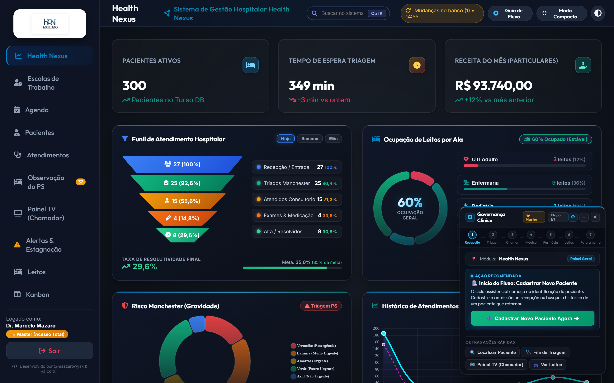
🔒 Perfis de Acesso & Matriz de Permissões (RBAC)
| Perfil | Acesso Visual às Abas | Prontuário (PEP) | Triagem Manchester | Prescrição Médica | Gestão de Leitos | Faturamento / TISS | Configurações / Nuvem |
|---|---|---|---|---|---|---|---|
| Master / Admin | Todas as 13 abas habilitadas | Acesso Completo & Auditoria | Execução & Edição | Visualização & Auditoria | Controle Total de Vagas | Gestão Financeira Global | Configuração Total & Backup |
| Médico(a) | Dashboard, Pacientes, Atendimentos, Leitos, Farmácia, Relatórios | Assinatura Digital SOAPE | Consulta de Sinais Vitais | Prescrição & CDSS Ativo | Solicitação de Internação | Visualização de Procedimentos | Bloqueado por Política |
| Enfermeiro(a) | Dashboard, Pacientes, Atendimentos, Leitos, Farmácia, Escalas | Leitura de Condutas | Execução Manchester & MEWS | Checagem de Aprazamento | Movimentação & Higienização | Bloqueado por Política | Bloqueado por Política |
| Recepcionista | Dashboard, Pacientes, Agenda, Atendimentos, Painel TV | Bloqueado por Sigilo | Encaminhamento para Fila | Bloqueado por Política | Bloqueado por Política | Emissão de Recibo Particular | Bloqueado por Política |
| Farmacêutico(a) | Dashboard, Farmácia, Atendimentos (Prescrições), Relatórios | Consulta de Prescrições | Bloqueado por Política | Validação de Interações | Bloqueado por Política | Baixa de Medicamentos | Bloqueado por Política |
| Faturista / Finanças | Dashboard, Faturamento TISS, Relatórios, Configurações Básicas | Bloqueado (Dados Clínicos Ocultos) | Bloqueado por Política | Bloqueado por Política | Consulta de Diárias | Emissão XML TISS & Anti-Glosa | Relatórios de Caixa |
| Desenvolvedor | Todas as abas com Painel de Diagnóstico | Auditoria Técnica | Simulação de Triagens | Auditoria de Logs | Inspeção de Banco | Testes de Carga de Guias | Dual-Pipeline Sync & Console |
2. Central de Atendimentos & Painel Kanban
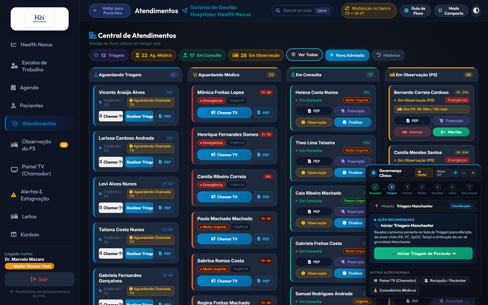
2.1. Cards Métricos e Filtros de Fila
No topo da aba Atendimentos, encontram-se os 5 Cards Métricos Clicáveis para controle imediato do fluxo:
| Card | Ícone | Cor Tema | Ação ao Clicar | Descrição / Objetivo | Meta Operacional |
|---|---|---|---|---|---|
| Triagem | 🩺 | Azul Clínico (#0284c7) |
filterKanbanColumn('triage') |
Filtra a tela para exibir exclusivamente a coluna de pacientes aguardando triagem. | Fila zero / Espera < 10 min |
| Ag. Médico | ⏳ | Amarelo (#f59e0b) |
filterKanbanColumn('waiting') |
Filtra a tela para exibir apenas os pacientes triados aguardando chamada do médico. | Respeitar SLA Manchester |
| Em Consulta | 👨⚕️ | Verde (#10b981) |
filterKanbanColumn('active') |
Filtra a tela para focar nos atendimentos em andamento em consultório médico. | Giro de consultório ágil |
| Em Observação | 🛏️ | Âmbar PS (#f59e0b) |
filterKanbanColumn('obs') |
Filtra a tela para focar nos pacientes alocados na 4ª coluna de observação do PS. | Reavaliação < 12h / CFM |
| Ver Todos | 📊 | Neutro (#94a3b8) |
filterKanbanColumn('all') |
Reseta os filtros e exibe as 4 colunas lado a lado no painel Kanban integrado. | Visão global do pronto-socorro |
2.2. Fila 1: Aguardando Triagem (Protocolo de Manchester)
Pacientes admitidos na recepção dão entrada nesta fila para classificação de risco pela enfermagem.
Tabela de Parâmetros Clínicos e Sinais Vitais da Triagem
| Parâmetro Clínico | Unidade / Formato | Faixa de Referência Normal | Limiar de Alerta Moderado | Limiar Crítico de Emergência | Conduta Imediata no Sistema |
|---|---|---|---|---|---|
| Pressão Arterial (PA) | mmHg (000/00) |
110/70 a 120/80 mmHg | 140/90 a 179/109 mmHg | PAS >= 180 ou PAD >= 110 mmHg | Aciona Protocolo de Crise Hipertensiva |
| Frequência Cardíaca (FC) | bpm | 60 a 100 bpm | 101 a 120 bpm ou 50 a 59 bpm | FC > 130 bpm ou FC < 40 bpm | Alerta de Taquiarritmia / Bradicardia Grave |
| Frequência Respiratória | irpm | 12 a 20 irpm | 21 a 24 irpm | FR > 28 irpm ou FR < 10 irpm | Alerta de Insuficiência Respiratória Aguda |
| Temperatura Axilar | °C | 36,0°C a 37,2°C | 37,8°C a 38,9°C (Febre) | Temp >= 39,5°C ou Temp < 35,0°C | Protocolo de Sepse / Manta Térmica |
| Saturação de Oxigênio (SpO2) | % em ar ambiente | 95% a 100% | 92% a 94% | SpO2 < 90% | Oferta imediata de O2 sob máscara / cateter |
| Glicemia Capilar | mg/dL | 70 a 99 mg/dL (jejum) | 140 a 250 mg/dL | Glicemia < 60 ou > 300 mg/dL | Alerta de Hipoglicemia / Cetoacidose Diabética |
| Escala de Coma de Glasgow | Escore (3 a 15) | 15 (Lúcido e Orientado) | 13 a 14 (Sonolento) | Glasgow <= 8 | Intubação Orotraqueal / Sala Vermelha |
| Escala Visual Analógica (EVA) | Escore (0 a 10) | 0 a 2 (Dor Leve) | 4 a 7 (Dor Moderada) | 8 a 10 (Dor Intensa / Insuportável) | Analgesia escalonada imediata |
Tabela de Classificação de Risco (Manchester) e Metas de Tempo
| Cor de Risco | Gravidade Clínica | Meta Máxima de Espera | Sinalização Visual no Card | Protocolo Automático Associado | Ação Obrigatória da Equipe |
|---|---|---|---|---|---|
| Vermelho | Emergência Absoluta | Imediato (0 min) | Card Vermelho Piscante com Sirene | Protocolo de Ressuscitação / Parada / Choque | Conduzir imediatamente à Sala Vermelha sem burocracia. |
| Laranja | Muito Urgente | 10 minutos | Borda Laranja com Badge Alerta | Protocolo IAM / AVC Isquêmico / Dor Torácica | Prioridade máxima na fila; chamar médico de plantão. |
| Amarelo | Urgente | 60 minutos | Borda Amarela com Contador | Protocolo de Sepse / Crise Asmática / Fraturas | Monitorização periódica de sinais vitais a cada 30 min. |
| Verde | Pouco Urgente | 120 minutos | Borda Verde com Tempo Transcorrido | Queixas Agudas Simples / Amigdalites / Entorses | Acomodação na sala de espera assistida. |
| Azul | Não Urgente | 240 minutos | Borda Azul Padrão | Queixas Crônicas / Troca de Receita / Atestados | Orientação de atendimento em Unidade Básica de Saúde. |
2.3. Fila 2: Aguardando Médico (Chamada de Consultório)
Nesta coluna, os pacientes são ordenados por Gravidade Manchester e Tempo de Espera Decorrido.
Tabela de Operações da Fila de Espera Médica
| Ação no Card | Ícone | Função Operacional | Mecanismo Técnico Envolvido | Efeito Imediato no Sistema |
|---|---|---|---|---|
| Chamar Paciente na TV | 📢 | Dispara chamada sonora e visual | Web Speech API + Websocket Local | Toca o chime de chamada, pronuncia nome do paciente e sala na TV. |
| Iniciar Atendimento | 🩺 | Abre o consultório e inicia consulta | Move registro para coluna "Em Consulta" | Carrega os dados da triagem e histórico anterior no PEP médico. |
| Reclassificar Risco | 🔄 | Reavalia o estado de saúde na espera | Abre o modal de reclassificação | Atualiza a cor Manchester caso o quadro clínico tenha piorado. |
| Encaminhar para Medicação | 💉 | Administra medicação de alívio rápida | Emite solicitação para a sala de medicação | Paciente aguarda analgesia sem perder posição na fila. |
| Registrar Evasão | 🏃 | Registra desistência do paciente | Altera status para "Evadido" | Libera a fila e gera log de auditoria com data e hora exatas. |
2.4. Fila 3: Em Consulta (Ações do Médico no Consultório)
Coluna onde o médico realiza a consulta ativa. Cada card contém botões de ação clínica:
Tabela de Controles e Botões de Ação do Médico no Consultório
| Botão | Ícone | Ação Executada | Parâmetros Obrigatórios | Resultado no Fluxo Hospitalar |
|---|---|---|---|---|
| PEP | 🩺 | Abre o Prontuário Eletrônico SOAPE | Login médico ativo e CRM | Acesso total a anamnese, hipóteses diagnósticas e IA preditiva. |
| Prescrição | 📜 | Abre o receituário digital | Seleção de medicamento e posologia | Gera receita com código de barras, QR Code CFM e baixa na farmácia. |
| Observação | ⏱️ | Coloca em observação no PS (12h/24h) | Motivo clínico e reavaliação | Transfere paciente para a Fila 4 (Em Observação) com timer ativo. |
| Finalizar | ✅ | Conclui o atendimento com alta médica | Diagnóstico CID-10 e conduta final | Emite atestado, receita, guia de faturamento e encerra a conta. |
2.5. Fila 4: Em Observação (PS) & Aba Dedicada de Observação
A 4ª coluna do Kanban e a aba dedicada Observação do PS operam em conformidade estrita com a Resolução CFM nº 2.079/14:
- Regulamentação Federal (CFM nº 2.079/14):
- Tempo Máximo: O tempo de permanência de um paciente em leito de observação de Pronto-Socorro não deve ultrapassar 24 horas.
- Meta Assistencial de Reavaliação: O paciente deve ter seu desfecho definido (alta ou internação em leito hospitalar) em até 12 horas.
- Classificação Visual de Permanência:
- 🔵 Seguro (< 6 horas): Fase de hidratação, analgesia e exames complementares de urgência.
- 🟡 Alerta de Reavaliação (6 a 12 horas): Reavaliação médica obrigatória de conduta.
- 🔴 Crítico / Limite Excedido (> 12 horas): Badge pulsante com botão INTERNAR em destaque para transferência imediata a leito hospitalar (UTI, Semi-UTI ou Enfermaria).
Tabela de Ações Clínicas na Observação do PS
| Botão | Ícone | Ação Executada | Parâmetros Obrigatórios | Efeito Assistencial no Sistema |
|---|---|---|---|---|
| PEP | 🩺 | Abre o Prontuário Eletrônico | Login ativo | Permite evolução clínica de enfermagem e médica durante a permanência. |
| Prescrição | 📜 | Prescrição de medicações rápidas | Medicamento e via | Prescreve hidratação venosa, analgésicos e antieméticos no PS. |
| Internar | 🛏️ | Abre modal de alocação de leito | Setor (UTI/Enfermaria) | Transfere o paciente para a Central de Leitos e libera a vaga de observação. |
| Alta Obs | 🚶 | Concede alta da observação médica | Confirmação do operador | Finaliza o atendimento no PS, libera a poltrona e atualiza a aba Pacientes com status "Alta" e carimbo de data/hora. |
3. Prontuário Eletrônico Médico (PEP SOAPE)
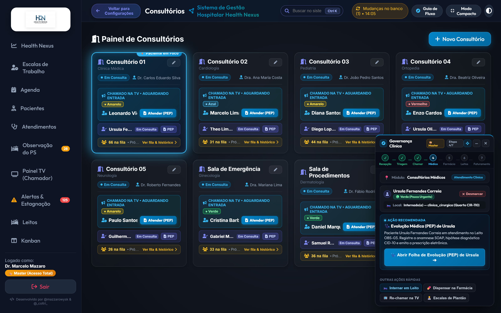
3.0. Nova Experiência de Abertura: Listagem de PEPs Existentes & Inclusão Intuitiva
Ao clicar no botão "Abrir PEP" em qualquer módulo assistencial (Observação do Pronto-Socorro, Consultórios de Atendimento, Central de Leitos ou Relatórios Clínicos), o sistema adota um fluxo direto centrado na segurança e no histórico prévio do paciente:
Abertura Padrão na Listagem (
📋 Listagem de PEPs Existentes):- O profissional visualiza de imediato a ordem cronológica decrescente de todas as evoluções clínicas registradas para aquele paciente em todas as passagens e setores hospitalares (Triagem, Consultório, Observação PS, UTI e Leitos).
- Cada card do histórico apresenta:
- Setor ou ala de atendimento (com ícone visual dedicado).
- Data e hora exatas da evolução.
- Status assistencial (
✓ Assinado / Finalizadoou⏳ Rascunho / Em Andamento). - Nome do médico assistente e CRM.
- Hipótese diagnóstica / CID-10 e prévia dos blocos Subjetivo e Conduta.
- Botão
👁️ Visualizar PEP Completo: abre o modo leitura estruturado com carimbo CFM e botão de retorno← Voltar para Lista de PEPs. - Botão
✏️ Continuar / Editar: permite retomar prontuários em aberto ou rascunhos.
Inclusão Direta e Acessível (
➕ Incluir Novo PEP):- Um botão em destaque no cabeçalho superior e no topo da lista permite abrir imediatamente uma folha limpa de evolução clínica (SOAP).
- No formulário de preenchimento, o cabeçalho exibe o botão
← Voltar para Lista de PEPs, permitindo consultar dados anteriores sem perder o contexto do atendimento. - Caso o paciente ainda não possua nenhum prontuário anterior (zero registros), o sistema apresenta uma tela inicial amigável com o botão
➕ Incluir Primeiro PEP Agora.
3.0.1. Alerta Pulsante de Observação > 12h & Governança Clínica (Resolução CFM nº 2.079/14)
Em conformidade com a Resolução CFM nº 2.079/14, o tempo máximo de permanência de um paciente em leito de observação de Pronto-Socorro é de 24 horas, devendo a conduta médica definitiva (alta ou internação hospitalar) ser deliberada prioritariamente em até 12 horas.
Quando um paciente permanece em observação por tempo superior a 12 horas, o Health Nexus ativa uma dupla camada de governança clínica ao abrir o Prontuário Eletrônico:
Card de Observação Pulsante no Prontuário (
pep-obs-pulse-alert):- Na aba
📋 Listagem de PEPs Existentes, o card do registro de observação em aberto recebe uma animação pulsante contínua com halo luminoso de alerta (pepObsCardPulse), destacando-se de qualquer outro prontuário. - Badge de Alerta Temporal: Exibe o tempo decorrido ao vivo (
PERMANÊNCIA > 12H (Xh Ymin) · CFM Nº 2.079/14) com beacon pulsante. - Quadro Explicativo de Conduta Dupla:
- 🚨 Possibilidade 1: Agravamento / Instabilidade Clínica: Sintomas persistentes, febre refratária, dessaturação (SpO₂ < 94%) ou elevação do MEWS indicam falha da resposta inicial, tornando mandatória a Internação Hospitalar imediata em Leito (Enfermaria ou UTI).
- 🌿 Possibilidade 2: Estabilidade / Melhora Clínica: Paciente compensado, afebril, sinais vitais estabilizados e dor controlada indicam indicação de Alta Médica da Observação com orientações e prescrição de desospitalização.
- Ações Imediatas no Card: Botões diretos
[ 🛏️ Solicitar Internação (Agravo) ]e[ 🚪 Conceder Alta (Melhora) ], além de visualização e edição.
- Na aba
Guia Lateral de Governança Clínica (Smart Flow Guide):
- Ao lado do prontuário, o painel inteligente calcula em tempo real os parâmetros clínicos aferidos do paciente (PA, FC, Temp, SpO₂, MEWS e Classificação Manchester).
- Apresenta as instruções para a tomada de decisão médica, disponibilizando como ação primária o botão
🛏️ Internar em Leito Hospitalar (Agravo) ➔e atalhos rápidos para🚪 Conceder Alta da Observação (Melhora)e💾 Salvar Evolução / Prescrição.
3.1. Estrutura SOAPE
| Bloco SOAPE | Elemento Clínico | Finalidade do Registro | Exemplo de Preenchimento Padronizado |
|---|---|---|---|
| Subjetivo (S) | Anamnese & Queixa | Relato cronológico e queixas narradas pelo paciente | "Paciente relata dor precordial em aperto há 90 min, com irradiação para mandíbula e MSE, associada a náuseas e sudorese fria profusa." |
| Objetivo (O) | Exame Físico & Sinais | Dados mensuráveis, sinais vitais e achados de palpação | "BEG, sudoreico, taquicárdico. PA: 150/95 mmHg, FC: 108 bpm, FR: 22 irpm, SpO2: 94%. Ausculta cardíaca: RCR 2T sem sopros. Murmúrio vesicular presente." |
| Avaliação (A) | Diagnóstico & Escore | Hipótese diagnóstica estruturada e código CID-10 | "I21.0 — Infarto agudo transmural da parede anterior do miocárdio. TIMI Risk: 5 pontos (Alto Risco)." |
| Plano (P) | Conduta Terapêutica | Prescrição medicamentosa, pedidos de exames e dieta | "ECG 12 derivações imediato, AAS 300mg VO mastigável, Clopidogrel 300mg VO, Nitroglicerina SL se dor, contato urgente com hemodinâmica." |
| Evolução (E) | Resposta ao Tratamento | Acompanhamento temporal da resposta às condutas | "Após 30 minutos de analgesia, paciente relata melhora substancial da dor (EVA 2/10). ECG evidenciou supradesnivelamento de ST em V1-V4." |
3.2. Motor CDSS & Alertas de Interações Medicamentosas
O módulo de Suporte à Decisão Clínica (CDSS) monitora ativamente as prescrições para prevenir eventos adversos graves:
| Interação Fármaco A + B | Nível de Gravidade | Mecanismo Farmacodinâmico | Risco Clínico Potencial | Ação Automática Recomendada pelo Sistema |
|---|---|---|---|---|
| Sildenafila + Isossorbida | 🔴 Contraindicação Absoluta | Potencialização excessiva do óxido nítrico e GMPc | Hipotensão arterial severa e choque refratário | Bloqueia emissão da prescrição e exige troca de vasodilatador. |
| Varfarina + Cetoprofeno | 🔴 Contraindicação Absoluta | Deslocamento da ligação proteica e inibição plaquetária | Hemorragia digestiva alta e sangramento grave | Sugere substituição do AINE por Dipirona ou Paracetamol. |
| Fentanil + Midazolam | 🔴 Alto Risco | Sinergismo depressor sobre o centro respiratório central | Depressão respiratória severa, apneia e óbito | Alerta para monitorização rigorosa com oxímetro e Naloxona à mão. |
| Azitromicina + Ondansetrona | 🟡 Risco Moderado | Bloqueio dos canais de potássio hERG no miocárdio | Prolongamento do intervalo QTc e Torsades de Pointes | Solicita confirmação com realização de ECG prévio à infusão. |
| Clonazepam + Morfina | 🔴 Alto Risco | Potencialização da sedação e depressão no SNC | Sedação profunda, hipoxemia e redução do reflexo de tosse | Reduz doses recomendadas em 50% e orienta leito monitorizado. |
| Ciprofloxacino + Dexametasona | 🟡 Risco Moderado | Alteração do metabolismo de colágeno e fibroblastos | Tendinite aguda e risco aumentado de ruptura do tendão de Aquiles | Alerta o médico para limitar tempo de uso em pacientes idosos. |
| Espironolactona + Enalapril | 🟡 Risco Moderado | Inibição cumulativa da excreção renal de potássio | Hipercalemia grave com arritmias ventriculares | Sugere monitorização do potássio sérico e função renal (ureia/creatinina). |
| Fluconazol + Sinvastatina | 🔴 Alto Risco | Inibição potente do citocromo CYP3A4 | Rabdomiólise e insuficiência renal aguda | Recomenda suspensão temporária da estatina durante o antifúngico. |
3.3. Autocomplete CID-10 e Diagnósticos Frequentes
| Código CID-10 | Descrição Oficial da Doença (OMS) | Especialidade Responsável | Protocolo de Emergência Associado | Exames Complementares Típicos |
|---|---|---|---|---|
| I21.9 | Infarto Agudo do Miocárdio não especificado | Cardiologia / Emergência | Protocolo IAM (Porta-ECG < 10 min) | Troponina I, CK-MB, ECG 12 derivações, Ecocardiograma. |
| I64 | Acidente Vascular Cerebral não especificado | Neurologia / Emergência | Protocolo AVC (Janela Trombolítica 4,5h) | Tomografia de Crânio, Angio-TC, Glicemia, Tempo de Protrombina. |
| A41.9 | Sepse não especificada | Terapia Intensiva / PS | Protocolo Sepse (Pacote da 1ª Hora) | Hemoculturas (2 pares), Lactato Sérico, Gasometria, Leucograma. |
| J18.9 | Pneumonia não especificada | Pneumologia / Clínica | Protocolo Respiratório (CURB-65) | Radiografia de Tórax, PCR quantitativo, Hemograma completo. |
| K35.8 | Apendicite Aguda Outra e a Não Especificada | Cirurgia Geral | Protocolo de Abdome Agudo Cirúrgico | Ultrassom de Abdome, Tomografia, Jejum absoluto, Hemograma. |
| E11.0 | Diabetes Mellitus Tipo 2 com Coma | Endocrinologia / Emergência | Protocolo de Cetoacidose / Estado Hiperosmolar | Glicemia horária, Gasometria arterial, Cetonemia, Eletrólitos. |
| J44.1 | DPOC com Exacerbação Aguda | Pneumologia / Emergência | Protocolo DPOC Descompensado | Gasometria arterial, Radiografia de tórax, Nebulização contínua. |
| R10.4 | Outras Dores Abdominais e as Não Especificadas | Clínica Geral / PS | Investigação Diagnóstica em Observação | Amilase, Lipase, EAS urina, Ultrassonografia total. |
3.4. Assinatura Eletrônica, Hash SHA-256 e QR Code CFM
| Requisito de Segurança | Tecnologia Empregada | Legislação & Conformidade | Impacto Prático na Autenticidade do Documento |
|---|---|---|---|
| Hash SHA-256 Criptográfico | Algoritmo determinístico de 256 bits | Medida Provisória nº 2.200-2 / ICP-Brasil | Gera uma impressão digital única; qualquer caractere alterado invalida o hash. |
| QR Code de Validação Pública | Imagem bidimensional com URL segura | Resolução CFM nº 2.299/2021 | Paciente ou farmácia escaneia com o smartphone e confere o laudo original online. |
| Carimbo Digital UTC | Sincronização temporal ISO-8601 | Padrão Horário de Brasília / Observatório Nacional | Prova a data e o segundo exato em que a conduta foi tomada. |
| CRM e RQE do Médico | Chave pública do prestador cadastrado | Conselho Regional de Medicina | Vincula juridicamente a autoria da receita ou laudo ao profissional habilitado. |
3.5. Solicitação Estruturada de Exames & Previsão Clínica por IA (CPOE)
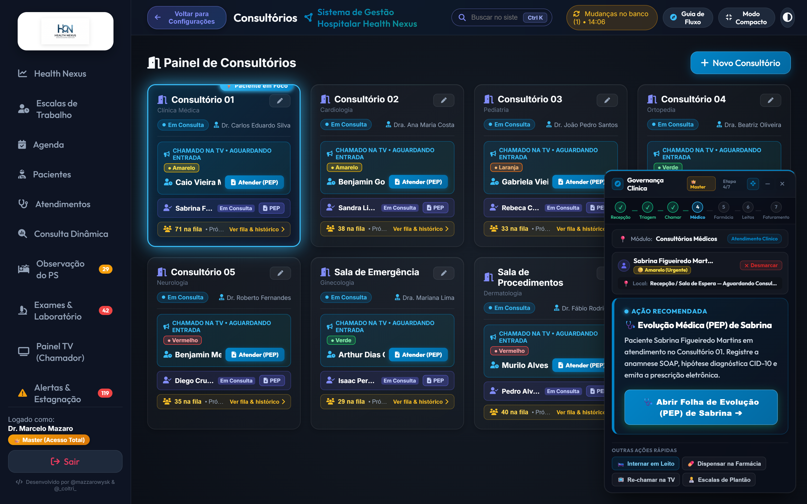
O Health Nexus disponibiliza no Prontuário Eletrônico (PEP) um módulo de Computerized Physician Order Entry (CPOE) dedicado à solicitação de exames diagnósticos, integrando o catálogo do nível básico ambulatorial à alta complexidade e medicina personalizada:
Catálogo Multicomplexidade em 4 Eixos Assistenciais:
- 🔬 Laboratório de Análises Clínicas: Hemograma completo, glicemia de jejum, hemoglobina glicada (HbA1c), perfil lipídico, creatinina sérica com estimativa de TFG, ureia, eletrólitos (Na/K/Mg), coagulograma (TAP/INR e TTPA), enzimas cardíacas (Troponina ultrassensível, CK-MB, NT-proBNP), marcadores de sepse (Lactato sérico arterial, hemoculturas em 2 pares), EAS e urocultura com antibiograma.
- 🩻 Imagem Convencional (Raio-X) & Seccional:
- Radiografia de Tórax (PA e perfil) — Raio-X: preparo com retirada de objetos metálicos; investigação de pneumonia, derrame pleural, fraturas de costela e infiltrados.
- Radiografia de Abdome agudo / simples — Raio-X: rotina de abdome agudo obstrutivo ou perfurativo e cálculos radiopacos.
- Radiografia de Coluna (cervical, dorsal ou lombar) — Raio-X: investigação de dorsalgias, lombalgias agudas, compressões e traumas axiais.
- Radiografia de Membros / Extremidades (ossos e articulações) — Raio-X: fraturas, contusões, entorses e traumas ortopédicos em ombro, braço, punho, mão, joelho, tornozelo e pé.
- Radiografia de Bacia / Pelve / Quadril — Raio-X: quedas da própria altura em idosos, fratura de fêmur e bacia.
- Radiografia de Seios da Face — Raio-X: sinusite aguda/crônica e dores faciais.
- Ultrassonografia: abdome total, rins e vias urinárias.
- Doppler Vascular: venoso de membros inferiores (TVP) e arterial de carótidas/vertebrais.
- Mamografia e Densitometria Óssea: rastreamento de neoplasia de mama e osteoporose.
- Tomografia Computadorizada (TC): crânio sem contraste, tórax, abdome e pelve com contraste, angiotomografia para protocolo TEP ou coronárias.
- Ressonância Magnética (RM): crânio, coluna vertebral e colangiorressonância.
- 📈 Métodos Gráficos & Funcionais: Eletrocardiograma de 12 derivações (ECG), ecocardiograma transtorácico, Holter 24h, MAPA 24h, teste ergométrico, espirometria computadorizada e eletroencefalograma (EEG).
- 🧬 Alta Complexidade & Medicina de Precisão: PET-CT oncológico com FDG, cintilografia miocárdica de esforço e repouso, painéis genéticos por NGS (Next-Generation Sequencing), biópsia líquida para DNA tumoral circulante, painéis moleculares RT-PCR multiplex e testes farmacogenéticos (CYP2C19/CYP2D6 para predição de resposta terapêutica individual).
Motor de Busca Inteligente com Sinônimos Médicos:
- Reconhecimento Imediato de Raio-X: Ao digitar no campo de busca termos como
"raio","raio-x","raio x","raiox","rx"ou"radiografia", o sistema exibe instantaneamente todos os exames radiológicos cadastrados. - Equivalências Médicas Automáticas: A busca suporta correspondência multi-termos e sinônimos usuais da rotina hospitalar:
Raio-X↔RX↔RadiografiaTC↔TomografiaRM↔RessonânciaUSG↔Ultrassom↔Ultrassonografia↔EcografiaECG↔Eletrocardiograma↔EletroECO↔EcocardiogramaEEG↔Eletroencefalograma
- Busca por Suspeita ou Parte Anatômica: Pesquisar por
"tórax","coluna","fratura"ou"pneumonia"localiza imediatamente o exame correspondente sem exigir a digitação do nome formal completo.
- Reconhecimento Imediato de Raio-X: Ao digitar no campo de busca termos como
Motor de Sugestões Preditivas Baseado no Histórico do Paciente:
- Condições Crônicas Preexistentes: Analisa automaticamente o histórico clínico e diagnósticos prévios. Pacientes diabéticos recebem sugestão de HbA1c, microalbuminúria e creatinina; pacientes hipertensos recebem perfil lipídico, ECG e eletrólitos; pacientes cardiopatas recebem NT-proBNP e ecocardiograma.
- Monitorização Farmacológica Ativa: Detecta medicações de uso contínuo (anticoagulantes como Varfarina demandam controle de TAP/INR; antiarrítmicos como Amiodarona demandam TSH e função hepática; estabilizadores como Lítio demandam litemia periódica; estatinas demandam enzimas hepáticas).
- Protocolos de Emergência Aguda & Traumatologia: Cruza com a queixa atual e sinais vitais informados na triagem Manchester ou na anamnese (dor torácica sugere protocolo IAM com ECG, Troponina seriada e D-Dímero; suspeita de AVC sugere TC de crânio urgente e coagulograma; traumas, quedas e dores articulares sugerem Raio-X de membros, bacia ou coluna; sintomas respiratórios sugerem Raio-X de tórax e RT-PCR).
- Rastreamento Populacional por Faixa Etária & Sexo: Alinha condutas preventivas conforme diretrizes do Ministério da Saúde e OMS (mamografia bienal para mulheres de 50 a 69 anos, sangue oculto nas fezes dos 50 aos 75 anos, densitometria óssea aos 65 anos).
Trava Inteligente de Não-Duplicidade & Segurança de Contraste:
- Prevenção de Repetição Desnecessária: Se um exame com intervalo protocolar longo (ex: HbA1c a cada 90 dias, ultrassom de rotina) já foi solicitado recentemente, o sistema emite alerta visual com os dias decorridos, evitando coletas invasivas desnecessárias e desperdício de insumos.
- Alerta de Contraste Iodado: Em exames tomográficos contrastados, alerta para histórico de alergia ao iodo ou disfunção renal prévia, recomendando conferência da creatinina recente antes da infusão.
Emissão de Requisição & Encaminhamento:
- Botão
🖨️ Salvar e Imprimir Requisição: Gera a folha oficial de solicitação de exames contendo dados do paciente, leito ou consultório, indicação clínica estruturada, prioridade (Rotina / Urgente / Emergência), preparos específicos e assinatura com CRM do médico solicitante. - Integração direta com a assinatura do PEP e armazenamento no banco de dados
exam_requests.
- Botão
3.5.1. Para Onde Vão os Exames Solicitados e Como Acompanhá-los no Fluxo Hospitalar
Ao emitir e assinar um pedido de exames no Health Nexus, as requisições seguem uma rota assistencial estruturada e rastreável em múltiplos pontos do sistema:
Repositório Central de SADT (
exam_requests):- Todos os exames geram um protocolo único de requisição indexado ao paciente, ao encontro clínico (
encounter) e ao médico solicitante. - O registro armazena a indicação clínica, a justificativa diagnóstica, os preparos orientados e o nível de prioridade (Rotina, Urgência ou Emergência).
- Todos os exames geram um protocolo único de requisição indexado ao paciente, ao encontro clínico (
Aba "🧪 Exames Solicitados" no Prontuário & Histórico do Paciente:
- No modal de histórico consolidado do paciente (acessível em qualquer momento na Central de Atendimentos ou na aba Pacientes), uma aba exclusiva lista todas as requisições já feitas.
- A equipe assistencial pode visualizar o protocolo, a data/hora do pedido, a lista de exames, o médico solicitante e reimprimir a requisição oficial a qualquer momento com um clique.
Painel Kanban de Atendimentos (Coluna "Em Consulta / Exames"):
- O paciente não some da vista da equipe: ele permanece visível na 3ª coluna do Kanban.
- Um cartão com destaque visual em azul oceano exibe o badge pulsante
🧪 Aguardando Exames (X pedidos), apresentando em tempo real os exames que estão sendo colhidos ou realizados no setor de SADT (Laboratório ou Imagem).
Histórico Integrado de Solicitações no Próprio PEP:
- Em consultas ou reavaliações futuras, o setor de exames do PEP carrega a listagem de solicitações anteriores, permitindo ao médico conferir o que já foi solicitado antes de definir a conduta final.
3.5.2. Prevenção de Alta Indevida & Novo Desfecho: "🧪 Aguardar Resultados de Exames"
Com o objetivo de tornar o fluxo 100% intuitivo e prevenir desfechos acidentais de alta enquanto o paciente ainda aguarda laudos diagnósticos, o sistema conta com uma blindagem assistencial preventiva:
Novo Desfecho Assistencial Dedicado:
- No campo Desfecho do Atendimento, além de Alta Médica, Observação e Internação, foi incorporada a opção:
🧪 Aguardar Resultados de Exames (Laboratório / Imagem).
- No campo Desfecho do Atendimento, além de Alta Médica, Observação e Internação, foi incorporada a opção:
Comutação Automática Inteligente:
- Ao adicionar um ou mais exames à lista de pedidos no PEP, o sistema altera automaticamente o campo de desfecho para "🧪 Aguardar Resultados de Exames".
- Um aviso orientador azul surge imediatamente na tela:
💡 "Você incluiu exames no pedido. O desfecho foi ajustado automaticamente para 'Aguardar Resultados de Exames' para manter o paciente ativo na fila e no consultório enquanto aguarda os laudos."
Guarda Preventiva Contra Alta Acidental:
- Se houver exames adicionados e o médico tentar mudar manualmente o desfecho para "Alta Médica", o sistema apresenta uma janela de confirmação de segurança:
⚠️ "Atenção: Há exames adicionados na solicitação. Dar alta agora liberará o paciente da fila de atendimento. Deseja realmente dar alta ao paciente com exames pendentes?" - Isso impede que cliques rápidos encerrem a passagem do paciente sem a devida reavaliação dos resultados laboratoriais e de imagem.
- Se houver exames adicionados e o médico tentar mudar manualmente o desfecho para "Alta Médica", o sistema apresenta uma janela de confirmação de segurança:
Preservação de Encontros & Auto-Cura de Cadastros:
- O encontro clínico permanece ativo com status
Aguardando_Examese localizaçãoLaboratório / Imagem — Aguardando Exames (Consultório). - Se algum paciente tiver recebido alta inadvertidamente com exames pendentes, rotinas inteligentes restauram automaticamente o status para
Ativoao iniciar a sessão, garantindo integridade clínica total.
- O encontro clínico permanece ativo com status
3.5.3. Exames Diagnósticos no PDF do Prontuário (PEP) & Botões de Emissão Direta
Todas as solicitações de exames diagnósticos e apoio terapêutico integram formalmente o documento oficial impresso do Prontuário Eletrônico do Paciente (PEP):
Seção Dedicada de SADT / CPOE no Relatório em PDF:
- O documento em PDF exportado passa a contar com a seção:
4. SOLICITAÇÕES DE EXAMES DIAGNÓSTICOS & APOIO TERAPÊUTICO (SADT / CPOE). - A tabela estruturada consolida:
- Data / Hora: Registro temporal com segundo exato da requisição.
- Protocolo: Código único e rastreável da requisição (
REQ-...). - Exame / Modalidade & Preparo: Nome do exame (laboratorial, radiológico, método gráfico ou genético) com orientações de preparo e jejum.
- Prioridade: Nível clínico (Rotina, Urgência ou Emergência).
- Indicação Clínica: Justificativa diagnóstica e hipótese investigada pelo médico.
- Médico Solicitante: Nome completo do profissional e CRM autenticado.
- O documento em PDF exportado passa a contar com a seção:
Botões de Emissão Imediata Direto na Tela do PEP:
- Cabeçalho Superior: Botão
📄 Imprimir PEP (PDF)ao lado dos atalhos de Teleconsulta e WhatsApp, permitindo exportar o prontuário completo a qualquer momento da consulta. - Rodapé do Formulário SOAP: Botão
📄 Imprimir PEP (PDF)acessível tanto em modo de preenchimento ativo quanto em modo de somente leitura (auditoria), permitindo gerar o PDF antes ou depois de assinar e encaminhar.
- Cabeçalho Superior: Botão
4. Guia Completo de Todos os Modais do Sistema
4.1. Modal de Triagem Manchester
- Gatilho de Abertura: Clique no botão
Realizar Triagemna coluna 1 do Kanban de Atendimentos. - Campos de Entrada do Formulário:
| Campo | Identificador HTML | Tipo de Entrada | Regra de Validação | Exemplo de Preenchimento Válido |
|---|---|---|---|---|
| Pressão Arterial | #triage-pa |
Texto formatado | Máscara 000/00, PAS 50-300, PAD 30-200 |
120/80 |
| Frequência Cardíaca | #triage-fc |
Numérico | Inteiro positivo entre 30 e 250 bpm | 78 |
| Frequência Respiratória | #triage-fr |
Numérico | Inteiro positivo entre 8 e 60 irpm | 16 |
| Temperatura | #triage-temp |
Decimal (00.0) |
Valor entre 32.0 e 43.0 °C | 36.6 |
| Saturação de O2 | #triage-spo2 |
Numérico | Porcentagem entre 50% e 100% | 98 |
| Glicemia Capilar | #triage-glicemia |
Numérico | Valor entre 20 e 800 mg/dL | 95 |
| Escala de Dor | #triage-dor |
Seletor (0 a 10) | Escala visual numérica obrigatória | 3 - Dor Leve |
| Queixa Principal | #triage-complaints |
Área de texto | Mínimo de 10 caracteres explicativos | Cefaleia holocraniana pulsátil há 1 dia. |
- Botões e Ações do Modal:
| Botão | Identificador HTML | Ação Disparada | Validação Prévia | Efeito no Sistema |
|---|---|---|---|---|
| Encaminhar p/ Consultório | #btn-submit-triage-consult |
Salva triagem e direciona para atendimento médico | Sinais vitais e classificação | Move o paciente para a coluna "Aguardando Médico" (Consultório 01). |
| Encaminhar p/ Observação (PS) | #btn-submit-triage-obs |
Salva triagem e direciona para a Sala de Observação | Sinais vitais e classificação | Move para a coluna "Em Observação (PS)" e aba Observação com cronômetro ativo. |
| Cancelar | #btn-cancel-triage |
Fecha modal sem persistir dados | Nenhuma validação exigida | Descarta alterações e mantém o paciente na fila de triagem. |
4.2. Modal de Prescrição & Receituário Médico
- Gatilho de Abertura: Clique no botão
Prescriçãono card do paciente ou dentro do PEP Médico. - Campos de Entrada do Formulário:
| Campo | Identificador HTML | Tipo de Entrada | Opções / Regras | Exemplo de Preenchimento Válido |
|---|---|---|---|---|
| Fármaco / Medicamento | #prescription-drug-search |
Autocomplete | Busca por nome comercial ou princípio ativo | Amoxicilina + Clavulanato 875mg |
| Dose Unitária | #prescription-dosage |
Texto curto | Valor e unidade de medida | 1 comprimido ou 500 mg |
| Via de Administração | #prescription-route |
Seletor | VO, EV, IM, SC, SL, Inalatória, Tópica | Via Oral (VO) |
| Posologia / Frequência | #prescription-freq |
Seletor / Texto | 8/8h, 12/12h, 1x ao dia, Se necessário | De 8 em 8 horas por 7 dias |
| Orientações Especiais | #prescription-notes |
Área de texto | Instruções para o paciente e enfermagem | Tomar após as principais refeições com água. |
- Botões e Ações do Modal:
| Botão | Identificador HTML | Ação Disparada | Validação Prévia | Efeito no Sistema |
|---|---|---|---|---|
| Adicionar Fármaco | #btn-add-drug-item |
Insere o medicamento na lista ativa | Fármaco e posologia preenchidos | Valida interação CDSS e inclui linha na receita. |
| Salvar & Dispensar | #btn-save-dispense |
Envia pedido direto à farmácia | Ao menos 1 medicamento na lista | Envia ordem de separação com baixa no estoque. |
| Imprimir Receita (PDF) | #btn-print-rx-pdf |
Gera PDF oficial padrão CFM com QR Code | Prescrição salva no sistema | Download de documento com carimbo digital SHA-256. |
| Fechar | #btn-close-prescription |
Encerra a visualização | Salva rascunho automático | Retorna à aba sem perder itens adicionados. |
4.3. Modal de Transferência & Alocação de Leito
- Gatilho de Abertura: Clique no botão
Transferir LeitoouInternarno card do paciente na Central de Atendimentos ou na Observação. - Campos de Entrada do Formulário:
| Campo | Identificador HTML | Tipo de Entrada | Regra de Negócio | Exemplo de Preenchimento Válido |
|---|---|---|---|---|
| Paciente Selecionado | #transfer-patient-name |
Texto somente-leitura | Pré-carregado com nome e prontuário | Marcelo Mazaro (Prontuário #0042) |
| Setor Hospitalar Destino | #transfer-sector-select |
Seletor de opções | UTI Adulto, Semi-UTI, CTI, Clínica Médica, Cirúrgica, Isolamento | UTI Adulto - Bloco B |
| Leito Vago Disponível | #transfer-bed-select |
Seletor dinâmico | Apenas leitos com status "Vago" | Leito UTI-03 (Vago / Higienizado) |
| Justificativa Clínica | #transfer-reason |
Área de texto | Mínimo 15 caracteres para auditoria | Necessidade de suporte ventilatório mecânico invasivo. |
- Botões e Ações do Modal:
| Botão | Identificador HTML | Ação Disparada | Validação Prévia | Efeito no Sistema |
|---|---|---|---|---|
| Confirmar Transferência | #btn-confirm-transfer |
Ocupa o novo leito e move paciente | Leito de destino vago selecionado | Altera status do leito para Ocupado e gera log. |
| Solicitar Higienização | #btn-request-cleaning |
Envia leito anterior para limpeza | Leito de origem desocupado | Marca leito anterior como "Higienização". |
| Cancelar | #btn-cancel-transfer |
Fecha janela sem alterações | Nenhuma validação exigida | Mantém o paciente no local atual. |
4.4. Modal de Nova Admissão & Entrada de Paciente
- Gatilho de Abertura: Clique no botão
+ Nova Admissãono topo da Central de Atendimentos ou tecleAlt + N. - Campos de Entrada do Formulário:
| Campo | Identificador HTML | Tipo de Entrada | Regra de Validação | Exemplo de Preenchimento Válido |
|---|---|---|---|---|
| Paciente | #admissao-patient-select |
Autocomplete / Busca | Paciente cadastrado no banco | Camila Ferreira de Souza |
| Tipo de Atendimento | #admissao-type |
Seletor | Emergência, Urgência, Consulta Eletiva | Pronto-Socorro Adulto |
| Convênio / Plano de Saúde | #admissao-insurance |
Seletor | SUS, Unimed, Bradesco, Particular | Unimed Saúde Nacional |
| Número da Carteirinha | #admissao-card-number |
Texto alfanumérico | Obrigatório se convênio privado | 0034.9812.3340.01-8 |
| Queixa Inicial / Motivo | #admissao-chief-complaint |
Texto curto | Descreve o motivo da procura médica | Febre persistente há 3 dias e tosse produtiva. |
- Botões e Ações do Modal:
| Botão | Identificador HTML | Ação Disparada | Validação Prévia | Efeito no Sistema |
|---|---|---|---|---|
| Confirmar Entrada | #btn-confirm-admissao |
Cria novo atendimento ativo | Paciente e motivo preenchidos | Insere o paciente na Fila 1 (Aguardando Triagem). |
| + Cadastrar Novo Paciente | #btn-quick-new-patient |
Abre modal de cadastro rápido | Nenhuma exigência prévia | Permite cadastrar paciente novo sem sair do fluxo. |
| Fechar | #btn-close-admissao |
Cancela a admissão | Nenhuma validação | Fecha o modal sem registrar atendimento. |
4.5. Modal de Direcionamento & Reatribuição de Fila
- Gatilho de Abertura: Na aba Estagnação, clique no botão
Direcionarde um paciente com tempo excedido. - Campos de Entrada do Formulário:
| Campo | Identificador HTML | Tipo de Entrada | Regra de Negócio | Exemplo de Preenchimento Válido |
|---|---|---|---|---|
| Paciente Estagnado | #stagnation-patient |
Somente leitura | Dados do atendimento com tempo em atraso | Lucas Mendes (Tempo decorrido: 13h 40min) |
| Novo Consultório | #stagnation-room |
Seletor de salas | Salas disponíveis com médico ativo | Consultório 03 (Dr. Roberto Alves) |
| Conduta Imediata | #stagnation-action |
Seletor | Reavaliar agora, Alta assistida, Vaga UTI | Reavaliação Médica Imediata |
| Observações da Regulação | #stagnation-notes |
Área de texto | Justificativa do remanejamento urgente | Paciente aguarda laudo de tomografia para desfecho. |
- Botões e Ações do Modal:
| Botão | Identificador HTML | Ação Disparada | Validação Prévia | Efeito no Sistema |
|---|---|---|---|---|
| Confirmar Reatribuição | #btn-confirm-reassign |
Move paciente para topo da fila médica | Novo consultório selecionado | Zera alertas vermelhos e notifica médico da sala. |
| Solicitar Internação | #btn-request-bed-urgent |
Converte observação em internação | Laudo de solicitação preenchido | Cria chamado urgente na Central de Leitos. |
| Cancelar | #btn-cancel-reassign |
Descarta a operação | Nenhuma validação | Mantém paciente na fila de alerta de estagnação. |
4.6. Modal de Histórico Pós-Alta & Prontuário Consolidado
- Gatilho de Abertura: Clique no botão
Históricono cabeçalho ou na aba Pacientes. - Campos e Filtros do Histórico:
| Campo / Filtro | Identificador HTML | Tipo de Controle | Regra de Filtro | Exemplo de Uso |
|---|---|---|---|---|
| Busca por Nome ou CPF | #history-search-input |
Campo de busca instantânea | Filtra registros em tempo real | Renato Ramos ou 341.890 |
| Filtro por Período | #history-date-range |
Seletor de datas | Hoje, Últimos 7 dias, Mês, Personalizado | Últimos 30 dias |
| Filtro por Desfecho | #history-outcome-filter |
Seletor | Alta médica, Internação, Transferência | Alta Médica Curada |
- Botões e Ações do Modal:
| Botão | Identificador HTML | Ação Disparada | Validação Prévia | Efeito no Sistema |
|---|---|---|---|---|
| Imprimir Prontuário (PDF) | #btn-print-consolidated-pdf |
Gera PDF com toda a linha do cuidado | Atendimento selecionado | Baixa histórico completo com todas as evoluções. |
| Visualizar Evolução | #btn-view-timeline |
Abre linha do tempo detalhada | Seleção de registro | Exibe todos os passos da admissão até a alta. |
| Fechar | #btn-close-history |
Fecha modal de histórico | Nenhuma validação | Retorna à tela anterior. |
4.7. Modal de Aprovação de Acesso de Usuários
- Gatilho de Abertura: Exclusivo do Administrador Master na aba de Gestão de Usuários e Estagnação.
- Campos de Validação do Operador:
| Campo Informativo | Identificador HTML | Origem do Dado | Função de Auditoria |
|---|---|---|---|
| Nome Completo do Solicitante | #user-req-name |
Cadastro inicial | Identificação nominal do colaborador. |
| E-mail Institucional | #user-req-email |
Cadastro inicial | Validação de domínio corporativo (@hospital.com). |
| Perfil Solicitado | #user-req-role |
Formulário de registro | Cargo pretendido (Médico, Enfermagem, etc.). |
| Registro Profissional | #user-req-council |
CRM / COREN informado | Checagem de regularidade no conselho de classe. |
- Botões e Ações do Modal:
| Botão | Identificador HTML | Ação Disparada | Validação Prévia | Efeito no Sistema |
|---|---|---|---|---|
| Aprovar Acesso Total | #btn-approve-user |
Ativa credencial com perfil solicitado | Auditoria de CRM/COREN positiva | Libera login no sistema e sincroniza com Turso Cloud. |
| Aprovar com Restrição | #btn-approve-restricted |
Ativa perfil com permissões limitadas | Seleção de novo papel restrito | Usuário acessa apenas visualização básica. |
| Recusar Solicitação | #btn-reject-user |
Exclui cadastro pendente | Confirmação do administrador | Bloqueia credencial e envia notificação de recusa. |
4.8. Modal de Gestão de Usuários & Troca de Perfil
- Gatilho de Abertura: Clique no avatar ou nome do usuário logado no canto superior direito do cabeçalho.
- Campos de Configuração da Conta:
| Campo | Identificador HTML | Tipo de Entrada | Regra de Validação | Exemplo de Preenchimento Válido |
|---|---|---|---|---|
| Nome de Exibição | #profile-display-name |
Texto | Mínimo de 3 caracteres | Dr. Carlos Eduardo Silva |
| Senha Atual | #profile-current-password |
Senha | Obrigatória para validar alterações | ******** |
| Nova Senha | #profile-new-password |
Senha forte | Mínimo 8 dígitos, letras e números | Nexus@2026Secure |
| Confirmar Nova Senha | #profile-confirm-password |
Senha idêntica | Deve coincidir com a nova senha | Nexus@2026Secure |
- Botões e Ações do Modal:
| Botão | Identificador HTML | Ação Disparada | Validação Prévia | Efeito no Sistema |
|---|---|---|---|---|
| Salvar Alterações | #btn-save-profile |
Atualiza senha e dados cadastrais | Senha atual válida e confirmação correta | Emite toast de sucesso e atualiza a sessão. |
| Encerrar Sessão (Logout) | #btn-logout |
Efetua logout seguro do sistema | Confirmação do operador | Destrói o token JWT local e volta à tela de login. |
| Fechar | #btn-close-profile |
Encerra sem alterar dados | Nenhuma validação | Mantém as configurações originais da conta. |
4.9. Modal de Alerta de Atendimento Pendente em Andamento (Prevenção de Duplicidades)
- Gatilho de Abertura: Disparado automaticamente na Recepção (cadastro de novo paciente ou botão "Admitir" na tabela de pacientes) ou na Central de Atendimento (Kanban) caso o operador tente abrir um atendimento para um paciente que já possui uma passagem ativa no hospital (em Triagem, Consultório, Observação do PS ou Leito).
- Finalidade Assistencial: Prevenir geração de cards duplicados, prescrições paralelas e inconsistências no prontuário eletrônico.
- Informações Apresentadas no Modal:
| Informação Exibida | Origem dos Dados | Descrição / Significado Clínico | Exemplo Visual |
|---|---|---|---|
| Identificação do Paciente | Cadastro Mestre | Nome completo e prontuário único vinculado | Carlos Eduardo Silva |
| Localização Atual | Registro do Encontro | Setor físico exato onde o paciente está alocado | Sala de Observação (OBS-01) |
| Status do Fluxo | Etapa Assistencial | Fase atual do paciente na jornada hospitalar | Em Observação Clínica |
| Classificação Manchester | Triagem Manchester | Cor e gravidade clínica aferida na triagem | Laranja (Muito Urgente) |
| Tempo de Permanência | Cronômetro de Entrada | Data/hora de admissão e tempo total transcorrido no PS | 28h 33m no Pronto-Socorro |
- Botões e Ações de Decisão Assistencial:
| Botão | Identificador HTML | Ação Disparada | Validação Prévia | Efeito no Sistema |
|---|---|---|---|---|
| Visualizar Atendimento em Andamento | #btn-enc-alert-view |
Redireciona o operador para a aba ativa | Encontro ativo localizado | Abre a aba correspondente (Observação, Atendimento ou Leitos) com o card do paciente em destaque, sem criar duplicidades. |
| Encerrar Anterior e Abrir Novo | #btn-enc-alert-new |
Finaliza a passagem anterior e inicia nova | Confirmação assistencial | Concede desfecho auditável no atendimento anterior e abre a nova admissão com status limpo. |
| Cancelar Admissão | #btn-enc-alert-cancel |
Aborta a criação do atendimento | Nenhuma validação | Fecha o modal preservando os dados cadastrais e o atendimento atual sem alterações. |
5. Gestão de Pacientes & Linha do Cuidado Completa
Na aba Pacientes, o hospital mantém o cadastro centralizado e o acesso à trajetória clínica completa.
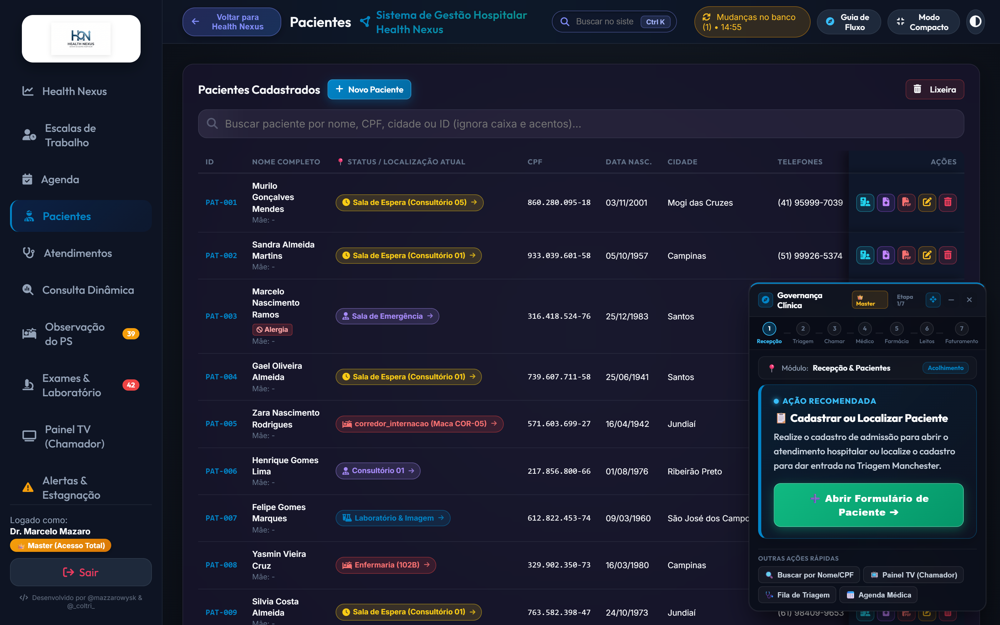
📋 Tabela de Campos Cadastrais do Paciente (Padrão 11 Campos SUS)
| # | Campo Cadastral | Identificador HTML | Tipo de Dado | Regra de Validação | Exemplo de Preenchimento Válido |
|---|---|---|---|---|---|
| 1 | Nome Completo | #paciente-nome |
Texto alfabético | Mínimo 3 caracteres, sem abreviações | Renato Ramos Machado |
| 2 | CPF | #paciente-cpf |
Numérico formatado | 11 dígitos com cálculo de dígitos verificadores | 341.890.128-44 |
| 3 | Data de Nascimento | #paciente-nascimento |
Data (AAAA-MM-DD) |
Não pode ser data futura; calcula idade automática | 1985-04-12 (41 anos) |
| 4 | Sexo / Gênero | #paciente-sexo |
Seletor de opções | Masculino, Feminino, Outro | Masculino |
| 5 | Nome Completo da Mãe | #paciente-mae |
Texto alfabético | Campo obrigatório para cruzamento no SUS | Maria das Dores Machado |
| 6 | Cartão Nacional SUS | #paciente-cns |
Numérico formatado | 15 dígitos padrão Ministério da Saúde | 700 1234 5678 9012 |
| 7 | Telefone / WhatsApp | #paciente-telefone |
Formato (00) 00000-0000 |
DDD de 2 dígitos + número de 9 dígitos | (11) 98765-4321 |
| 8 | CEP Residencial | #paciente-cep |
Formato 00000-000 |
8 dígitos; autopreenchimento via API ViaCEP | 01310-100 |
| 9 | Logradouro & Número | #paciente-endereco |
Texto | Preenchido automaticamente via CEP + número | Avenida Paulista, 1578, Apto 82 |
| 10 | Bairro, Cidade & UF | #paciente-cidade-uf |
Texto | Autopreenchido pelo CEP com sigla do estado | Bela Vista - São Paulo / SP |
| 11 | Responsável Legal | #responsibleName / #responsibleCpf |
Texto e CPF formatado | Obrigatório se idade < 18 anos ou > 65 anos | Tereza Ramos (Mãe) - (11) 98877-6655 |
| 12 | ID CROSS (Regulação SUS) | #crossPatientId |
Código alfanumérico | Código de vaga ou ID do paciente no CROSS SP | 1490028 |
| 13 | Nº Pasta / Arquivo Físico | #physicalChartNumber |
Texto alfanumérico | Localização da pasta do prontuário no SAME | Pasta 0, Caixa 12 |
| 14 | Alergias & Restrições | #allergies |
Texto com tags rápidas | Gera alerta imediato no PEP, Triagem e Prescrição | Dipirona, Penicilina, Contraste Iodado |
| 15 | Comorbidades & Crônicos | #medicalHistory |
Texto com tags rápidas | Alimenta o motor preditivo IA CPOE de exames | Hipertensão (HAS), Diabetes Mellitus (DM) |
| 16 | Cirurgias Prévias & Próteses | #surgicalHistory |
Texto livre | Histórico cirúrgico prévio para suporte anestésico | Apendicectomia (2018), Prótese de quadril |
| 17 | Ocorrências & Observações | #clinicalNotes |
Texto livre | Cuidados especiais, risco de queda, acompanhante | Risco de queda, Acompanhante contínuo |
🛡️ Tabela de Ações e Operações da Aba Pacientes
| Ação no Painel | Ícone / Botão | Finalidade Operacional | Regra de Segurança | Resultado no Banco de Dados |
|---|---|---|---|---|
| Novo Paciente | + Adicionar |
Cadastra novo prontuário | CPF único obrigatório | Cria registro com timestamp e ID sequencial. |
| Busca Spotlight | 🔍 | Localiza prontuários rapidamente | Busca por CPF ou parte do nome | Filtra a listagem em tempo real na tela. |
| Editar Cadastro | ✏️ | Atualiza telefone, endereço ou convênio | Apenas operadores autorizados | Grava nova versão com registro de auditoria. |
| Linha do Cuidado | 📜 | Exibe histórico completo de consultas | Qualquer profissional clínico | Abre timeline com todas as passagens no hospital. |
| Mover para Lixeira | 🗑️ | Soft-delete do paciente | Confirmação em modal seguro | Oculta da lista geral mantendo histórico seguro. |
| Restaurar Lixeira | ♻️ | Reativa paciente excluído | Exclusivo Administrador Master | Restaura prontuário com integridade intacta. |
6. Gestão da Equipe Médica & Corpo Clínico
Na aba Médicos, gerencia-se o corpo clínico, especialidades, consultórios e status de plantão ativo.
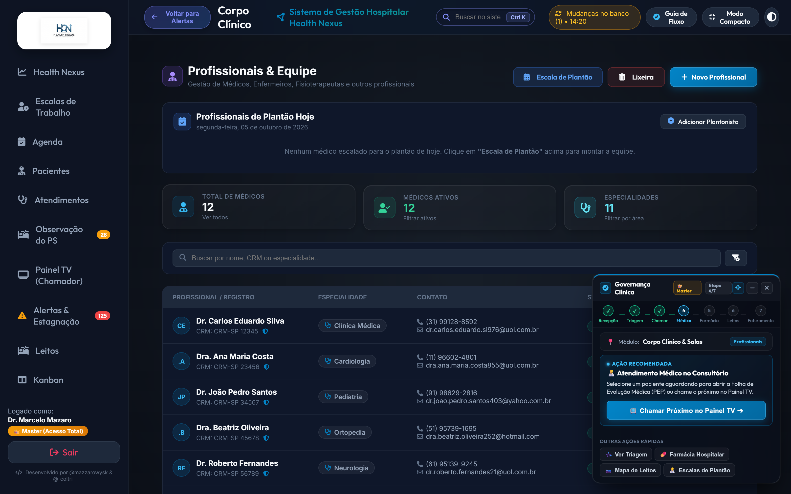
🩺 Tabela de Cadastro e Status do Corpo Clínico
| Médico(a) | CRM / UF | Especialidade RQE | Consultório Alocado | Turno de Trabalho | Status Plantão | Ações Disponíveis |
|---|---|---|---|---|---|---|
| Dr. Carlos Eduardo Silva | 123456/SP |
Cardiologia (RQE 45102) | Consultório 01 | Manhã (07h às 13h) | 🟢 Em Plantão |
🩺 Abrir PEP, Escala, Editar |
| Dra. Mariana Costa | 234567/SP |
Pediatria (RQE 38921) | Consultório 02 | Manhã (07h às 13h) | 🟢 Em Plantão |
🩺 Abrir PEP, Escala, Editar |
| Dr. Roberto Alves | 345678/SP |
Ortopedia e Traumatologia | Consultório 03 | Tarde (13h às 19h) | ⚪ Folga |
Ativar Plantão, Ver Agenda |
| Dra. Fernanda Lima | 456789/SP |
Emergência e Terapia Int. | Sala Vermelha | Noite 12h (19h às 07h) | 🟢 Em Plantão |
🚨 Sala Vermelha, Histórico |
| Dr. André Guimarães | 567890/SP |
Cirurgia Geral (RQE 21094) | Centro Cirúrgico | Plantão 24 horas | 🟢 Em Cirurgia |
Avisar Retorno, Substituto |
| Dra. Beatriz Santos | 678901/SP |
Ginecologia e Obstetrícia | Consultório 04 | Tarde (13h às 19h) | 🟡 Intervalo |
Retornar à Sala, Transferir |
| Dra. Juliana Costa | 789012/SP |
Cardiologia Intensiva | Consultório 01 | Noite 12h (19h às 07h) | 🟢 Em Plantão |
🩺 Abrir PEP, Escala, Plantão |
| Enf. Patrícia Lima | COREN-SP 18920 |
Enfermagem de Emergência | Sala de Triagem | Manhã (07h às 13h) | 🟢 Em Plantão |
🩺 Triagem MEWS, Troca Turno |
⚙️ Tabela de Operações de Gestão do Corpo Clínico
| Operação | Gatilho / Botão | Descrição do Procedimento | Requisito Prévio | Efeito Prático na Recepção e TV |
|---|---|---|---|---|
| Cadastrar Médico | + Novo Médico |
Registra nome, CRM, RQE e contatos | Validação de CRM junto ao CFM | Habilita o médico para escalas e assinaturas no PEP. |
| Alocar Consultório | Alocar Sala |
Define em qual sala física o médico atende | Consultório vago selecionado | Direciona o painel TV para chamar pacientes para a sala correta. |
| Alternar Plantão | Ativar / Pausar |
Alterna status entre Ativo, Intervalo e Folga | Seleção do profissional | Atualiza o contador de médicos disponíveis no Dashboard. |
| Substituição de Emergência | Substituir |
Transfere a fila de um médico para outro | Ausência justificada de médico | Move todos os pacientes em espera para o novo médico sem atraso. |
7. Gestão de Consultórios & Salas de Atendimento
Na aba Consultórios, gerencia-se a infraestrutura física de atendimento ambulatorial e emergencial.
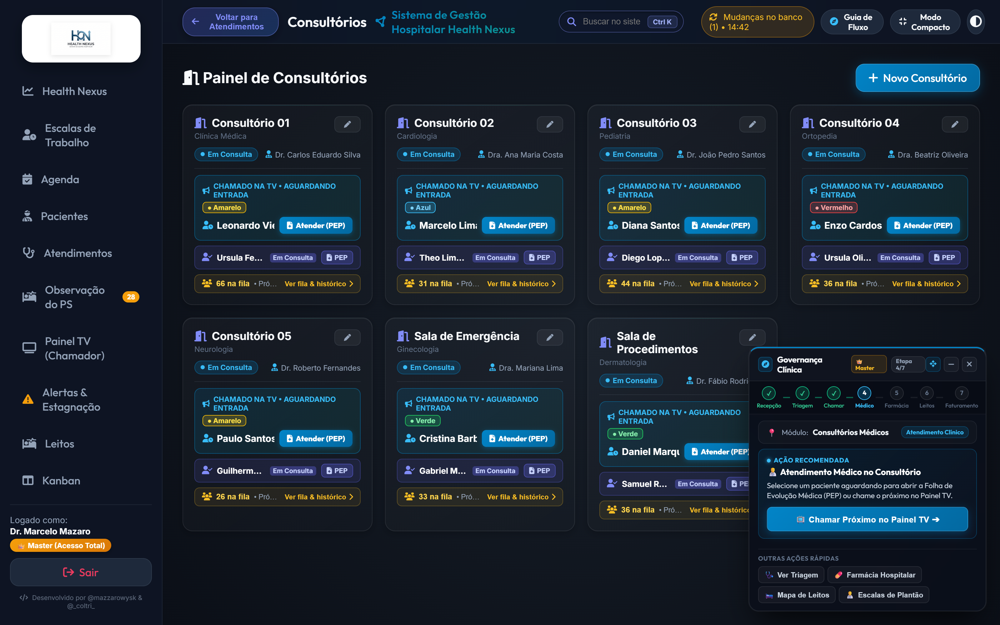
🚪 Tabela de Status e Ocupação das Salas de Atendimento
| Sala / Consultório | Ala / Bloco | Especialidade Principal | Médico Responsável | Status Atual | Tempo na Situação | Ações Rápidas |
|---|---|---|---|---|---|---|
| Consultório 01 | Térreo - Bloco A | Clínica Médica / Geral | Dr. Carlos Eduardo Silva | 🟢 Em Atendimento |
18 min | 🩺 Ver Atendimento, Finalizar |
| Consultório 02 | Térreo - Bloco A | Pediatria Ambulatorial | Dra. Mariana Costa | 🟢 Disponível |
4 min | 📢 Chamar Próximo, Pausar |
| Consultório 03 | Térreo - Bloco A | Ortopedia e Imobilizações | Dr. Roberto Alves | 🟡 Higienização |
12 min | ✨ Liberar Sala, Alocar Médico |
| Consultório 04 | Térreo - Bloco B | Ginecologia e Obstetrícia | Dra. Beatriz Santos | 🟢 Em Atendimento |
25 min | 🩺 Ver Atendimento, Pausar |
| Consultório 05 | 1º Andar - Especialidades | Neurologia Clínica | Dr. Marcos Vinicius | ⚪ Fechado |
Fora de Turno | Abrir Sala, Definir Escala |
| Sala Amarela | Ala de Urgência | Observação Rápida Adulto | Dra. Fernanda Lima | 🔴 Capacidade Máxima |
2h 15m | Transferir para Leito, Reavaliar |
| Sala Vermelha | Emergência Crítica | Ressuscitação & Politrauma | Equipe de Choque Plantonista | 🟢 Prontidão Total |
Prontidão Permanente | 🚨 Receber Emergência, Checklist |
| Sala de Sutura | Urgência Cirúrgica | Pequenos Procedimentos | Dr. André Guimarães | 🟢 Disponível |
8 min | Encaminhar Paciente, Repor Material |
| Obs. Pediátrica | Ala Infantil | Suporte Respiratório Pediátrico | Dra. Mariana Costa | 🟢 Disponível |
15 min | Acolher Criança, Oxigenoterapia |
| Sala de Gesso | Ortopedia | Imobilizações e Tala Gessada | Dr. Roberto Alves | 🟢 Disponível |
30 min | Realizar Redução, Imobilizar |
8. Gestão Avançada de Leitos, Censo & Histórico
Na aba Leitos, o hospital monitora a taxa de ocupação em tempo real, giros de leito e desinfecção.
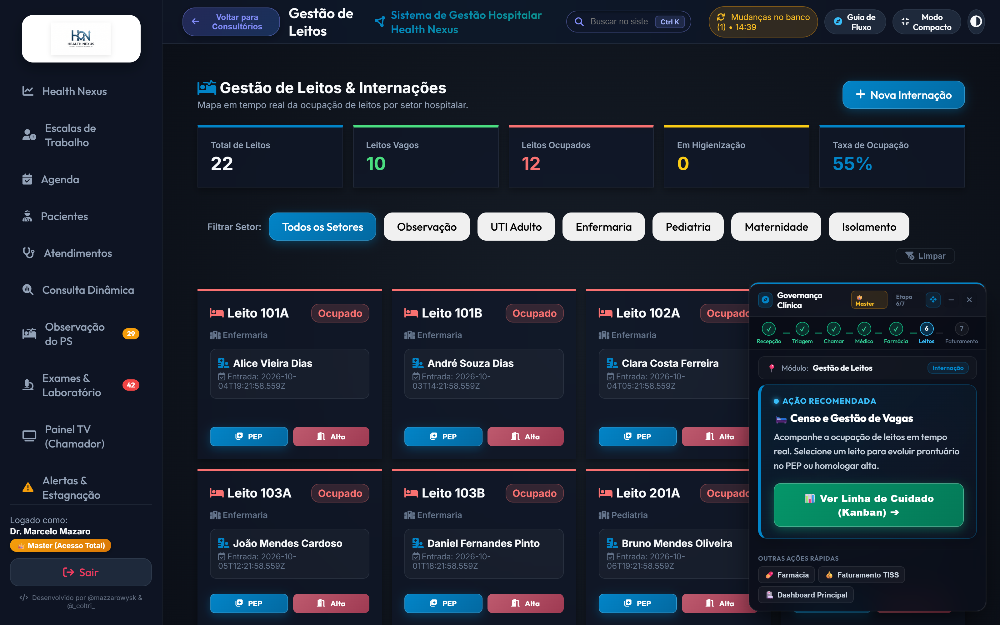
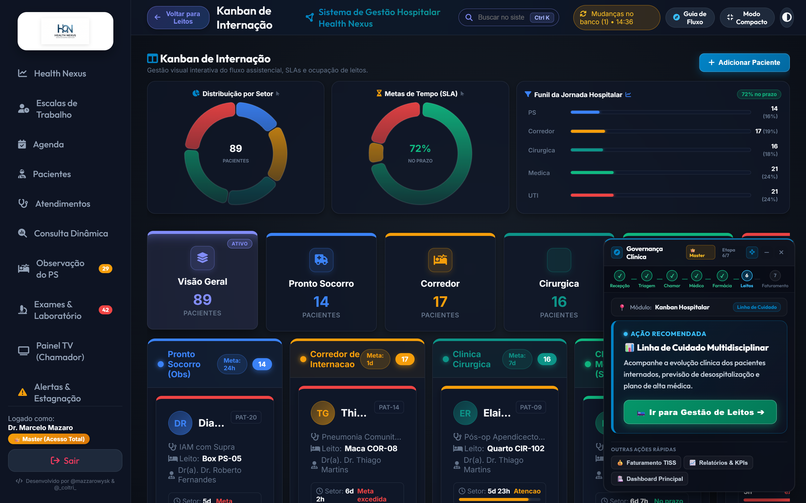
🛏️ Tabela do Censo Hospitalar e Mapa de Leitos
| Leito ID | Setor / Ala Hospitalar | Paciente Alocado | Diagnóstico de Internação | Tempo Internado | Status do Leito | Ações Permitidas |
|---|---|---|---|---|---|---|
| Leito 101-A | Enfermaria Geral Adulto | Marcelo Mazaro | Pneumonia Comunitária Grave | 2 dias | 🔴 Ocupado |
🩺 PEP, 📋 Prescrição, 🚪 Alta |
| Leito 101-B | Enfermaria Geral Adulto | Flávio Augusto Oliveira | Pós-operatório de Colecistectomia | 1 dia | 🔴 Ocupado |
🩺 PEP, 📋 Prescrição, 🚪 Alta |
| Leito 102-A | Enfermaria Geral Adulto | Vago para Admissão | Aguardando paciente regulado | 0h | 🟢 Vago |
🛏️ Internar Paciente, Bloquear |
| Leito 102-B | Enfermaria Geral Adulto | Em Desinfecção Terminal | Procedimento pós-alta de paciente | 35 min | 🟡 Higienização |
✨ Concluir Limpeza & Liberar |
| Leito 103-A | Enfermaria Geral Adulto | Carlos Eduardo Santos | Descompensação de ICC Classe III | 3 dias | 🔴 Ocupado |
🩺 PEP, Ecocardiograma, Diuréticos |
| Leito UTI-01 | UTI Geral Adulto | José Ramos dos Santos | Choque Séptico / Foco Pulmonar | 5 dias | 🔴 Ocupado |
🚨 Acompanhar UTI, Exames |
| Leito UTI-02 | UTI Geral Adulto | Vago com Ventilador Pronto | Vaga regulada para emergência | 0h | 🟢 Vago |
🛏️ Internar Paciente Crítico |
| Leito UTI-03 | UTI Geral Adulto | Helena Albuquerque | IAM com Supra pós-angioplastia | 3 dias | 🔴 Ocupado |
🩺 PEP, Curva Enzimática |
| Leito UTI-04 | UTI Geral Adulto | Amanda Vasconcelos | Pós-PCR revertida em monitorização | 1 dia | 🔴 Ocupado |
🚨 Gasometria 2/2h, Sedação Contínua |
| Leito ISOL-01 | Isolamento Respiratório | Lucas Mendes Neves | Suspeita de Tuberculose Bacilífera | 4 dias | 🔴 Ocupado |
🛡️ Protocolo Isolamento, Evolução |
| Leito ISOL-02 | Isolamento Respiratório | Vago com Pressão Negativa | Pronto para paciente infectocontagioso | 0h | 🟢 Vago |
🛏️ Alocar Caso Suspeito |
| Leito PED-01 | Enfermaria Pediátrica | Enzo Gabriel Ferreira (3 anos) | Bronquiolite Viral Aguda | 1 dia | 🔴 Ocupado |
🩺 PEP Pediátrico, Acompanhante |
⚡ Destaque Spotlight Pulsante & Sincronização em Tempo Real (v2.8.1)
- Realce Imediato no Mapa: Ao confirmar uma internação pelo PEP (desfecho "Solicitar Internação" → modal de leitos) ou pelo botão "Alocar Leito", o sistema invalida de forma imediata o cache em memória do navegador (
invalidateCacheForUrl). O card do leito é instantaneamente destacado com animação de pulso luminoso (patient-pulse-selected patient-spotlight-glow), badge⚡ Paciente em Focoe scroll suave centralizado. - Proteção contra Filtros Ocultos: Caso o filtro de setor esteja focado em uma ala diferente do leito alocado (ex: filtro em UTI para leito de Observação), o sistema redefine automaticamente o filtro para Todos os Setores, assegurando 100% de visibilidade para a equipe multidisciplinar.
- Preservação do Foco Assistencial no Guia de Fluxo (Smart Flow Guide): Na Etapa 6 de 6 (Gestão de Leitos), quando o paciente está internado, o card inteligente fixa o foco na assistência médica diária (
🩺 Evolução Médica no PEPcomo ação principal de 1-clique). Ficam disponíveis botões secundários para🚪 Conceder Alta,🎯 Focar no Leitoe📊 Ver no Kanban. O avanço para o Faturamento TISS é bloqueado até que a alta médica seja homologada, garantindo a integridade da linha de cuidado.
9. Agenda, Escala Médica & Consultas Eletivas
Na aba Agenda, realiza-se a marcação, controle de presença e integração com lembretes via WhatsApp.
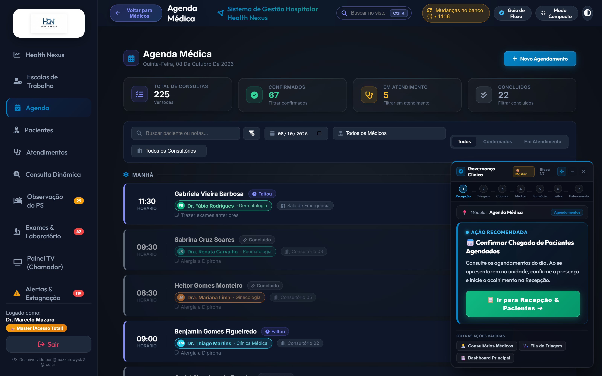
📅 Tabela de Operações da Grade de Agendamentos
| Operação | Parâmetros Obrigatórios | Mecanismo do Sistema | Resultado Gerado | Perfil Autorizado |
|---|---|---|---|---|
| Novo Agendamento | Paciente, Especialidade, Médico, Data, Hora | Grava consulta na grade horária | Ticket gerado e horário reservado na agenda. | Recepção, Médico, Master |
| Disparo WhatsApp Bot | ID da consulta e celular válido | API de mensageria com opções [1] Sim / [2] Não | Envia lembrete e registra status de confirmação. | Recepção, Sistema Automático |
| Check-in de Presença | Paciente presente na recepção | Altera status de Agendado para "Presente" | Move o paciente para a fila de espera do médico. | Recepção |
| Imprimir Comprovante | ID do agendamento confirmado | Gera documento PDF formatado em padrão A4 | Emite comprovante impresso de data e preparo. | Recepção, Paciente |
| Reagendar Horário | Novo dia e horário disponível | Atualiza data mantendo o histórico de contato | Notifica o paciente sobre o novo agendamento. | Recepção, Paciente |
| Cancelar Horário | Motivo do cancelamento registrado | Libera a vaga na grade e atualiza estatísticas | Vaga fica livre imediatamente para outros pacientes. | Recepção, Médico |
⏱️ Tabela de Tipos de Turnos e Regras das Escalas de Plantão
| Turno de Trabalho | Carga Horária | Horário Padrão | Intervalo Regulamentar | Regra de Substituição |
|---|---|---|---|---|
| Manhã (M6) | 6 horas | 07:00 às 13:00 | 15 minutos | Passagem de plantão obrigatória às 12:45. |
| Tarde (T6) | 6 horas | 13:00 às 19:00 | 15 minutos | Passagem de plantão obrigatória às 18:45. |
| Noite (N12) | 12 horas | 19:00 às 07:00 | 1 hora de descanso | Proibido abandono de posto sem rendição médica. |
| Plantão 24h | 24 horas | 07:00 às 07:00 (D+1) | Intervalos programados | Exclusivo para equipes de UTI e Centro Cirúrgico. |
| Regime 12x36 | 12 horas | Dias alternados | Folga de 36 horas subsequente | Escala padrão de enfermagem hospitalar. |
10. Farmácia & Dispensação de Medicamentos
Na aba Farmácia, faz-se a gestão de estoque, lotes, validade e rastreabilidade de medicamentos críticos.
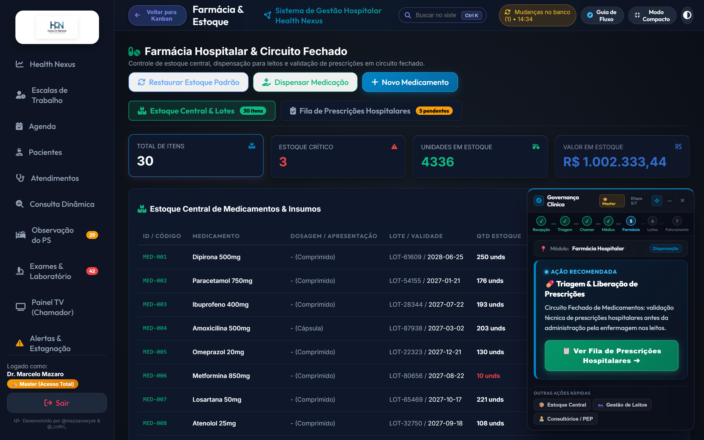
🏢 Arquitetura e Sub-Abas do Módulo de Farmácia (v2.9.27)
A aba Farmácia & Estoque organiza o fluxo farmacêutico em duas visões integradas com contadores dinâmicos nos botões de navegação:
📦 Estoque Central & Lotes (
#pharm-view-stock):- Visualização Padrão Imediata: Abre como tela principal da aba, apresentando a grade completa de itens hospitalares, lotes, dosagens, validades e saldo físico.
- 4 Cards de KPI em Tempo Real no Cabeçalho:
Total de Itens Cadastrados(#kpi-pharm-total): Quantidade de princípios ativos e apresentações registradas.Estoque Crítico / Reposição(#kpi-pharm-critical): Itens com saldo igual ou abaixo da cota de segurança.Total de Unidades Físicas(#kpi-pharm-units): Soma de todas as ampolas, comprimidos, bolsas e frascos disponíveis.Valor em Estoque (R$)(#kpi-pharm-value): Avaliação financeira total do patrimônio armazenado no almoxarifado farmacêutico.
- Ações Rápidas do Cabeçalho:
🌱 Restaurar Estoque Padrão(#btn-seed-pharm-stock): Restaura e reabastece instantaneamente os 35 medicamentos hospitalares essenciais caso a base esteja vazia ou corrompida.➕ Novo Medicamento / Lote: Formulário para inclusão manual de novos fármacos e lotes com código de barras.
📋 Fila de Prescrições Hospitalares — Circuito Fechado (
#pharm-view-rx):- Sub-aba com a fila de dispensação beira-leito para pacientes internados em leitos de UTI, Observação e Enfermarias.
- Exibe paciente, leito, data/hora da prescrição médica, medicamentos prescritos com posologia e botões de
DispensareChecagem Beira-Leito. - Badge numérico no botão da aba atualizado em tempo real com a quantidade de prescrições pendentes.
💊 Tabela de Catálogo de Medicamentos de Alto Giro e Emergência (35 Itens Essenciais)
| Fármaco / Princípio Ativo | Apresentação / Via | Número do Lote | Data de Validade | Estoque Atual | Estoque Mínimo | Status do Estoque |
|---|---|---|---|---|---|---|
| Dipirona Sódica 500mg/ml | Ampola 2ml (EV/IM) | L-9821 |
2027-12-31 | 450 ampolas | 100 ampolas | 🟢 Estoque Regular |
| Amoxicilina + Clavulanato 875mg | Comprimido Revestido (VO) | L-4410 |
2026-11-20 | 85 caixas | 100 caixas | 🟡 Abaixo do Mínimo |
| Fentanil 0,05mg/ml | Ampola 10ml (EV - Psicotrópico) | L-1102 |
2026-09-15 | 14 ampolas | 20 ampolas | 🔴 Alerta Reposição Crítica |
| Ceftriaxona Dissódica 1g | Frasco-ampola Pó (EV) | L-7734 |
2027-08-30 | 320 frascos | 80 frascos | 🟢 Estoque Regular |
| Adrenalina 1mg/ml (Epinefrina) | Ampola 1ml (EV/SC - Carrinho) | L-3390 |
2027-05-10 | 95 ampolas | 30 ampolas | 🟢 Estoque Regular |
| Enoxaparina Sódica 40mg/0,4ml | Seringa Preenchida (SC) | L-5521 |
2026-12-05 | 45 seringas | 50 seringas | 🟡 Abaixo do Mínimo |
| Midazolam 5mg/ml | Ampola 3ml (EV - Psicotrópico) | L-2219 |
2027-03-18 | 60 ampolas | 40 ampolas | 🟢 Estoque Regular |
| Amiodarona 50mg/ml | Ampola 3ml (EV - Antiarrítmico) | L-8841 |
2026-10-30 | 38 ampolas | 25 ampolas | 🟢 Estoque Regular |
| Morfina 10mg/ml | Ampola 1ml (EV - Entorpecente) | L-0092 |
2027-04-12 | 22 ampolas | 15 ampolas | 🟢 Estoque Controlado |
| Soro Fisiológico 0,9% 500ml | Bolsa Plástica Sistema Fechado | L-6612 |
2028-01-15 | 580 bolsas | 150 bolsas | 🟢 Estoque Regular |
| Metoclopramida 10mg/2ml | Ampola 2ml (EV/IM - Antiemético) | L-1834 |
2027-07-22 | 190 ampolas | 60 ampolas | 🟢 Estoque Regular |
| Omeprazol Sódico 40mg | Frasco-ampola Pó Liofilizado | L-9022 |
2026-12-18 | 130 frascos | 50 frascos | 🟢 Estoque Regular |
| Meropenem 1g | Frasco-ampola Pó (EV) | L-3341 |
2027-06-30 | 85 frascos | 30 frascos | 🟢 Estoque Regular |
| Vancomicina 500mg | Frasco-ampola Pó (EV) | L-5519 |
2027-03-15 | 70 frascos | 25 frascos | 🟢 Estoque Regular |
| Insulina Regular Humana 100 UI/ml | Frasco 10ml (SC/EV) | L-7740 |
2026-12-31 | 42 frascos | 20 frascos | 🟢 Estoque Regular |
| Insulina NPH Humana 100 UI/ml | Frasco 10ml (SC) | L-7741 |
2026-12-31 | 38 frascos | 20 frascos | 🟢 Estoque Regular |
| Diazepam 10mg/2ml | Ampola 2ml (EV/IM - Psicotrópico) | L-1288 |
2027-09-10 | 65 ampolas | 30 ampolas | 🟢 Estoque Regular |
| Tramadol 50mg/ml | Ampola 2ml (EV/IM) | L-4091 |
2027-08-15 | 110 ampolas | 40 ampolas | 🟢 Estoque Regular |
11. Faturamento, Guias TISS & Gestão Financeira
Na aba Faturamento TISS, gerenciam-se as guias de convênio, auditoria de procedimentos e arquivos XML ANS.
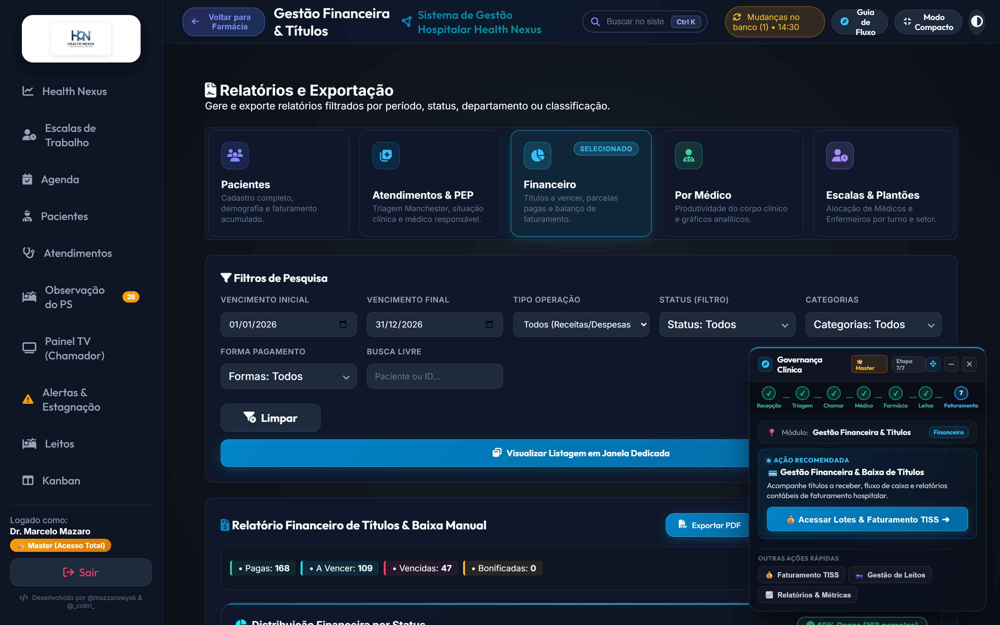
💰 Tabela de Guias e Lotes de Faturamento TISS
| Guia ID | Beneficiário | Convênio / Operadora | Código TUSS Principal | Valor Total | Status de Faturamento | Ações Disponíveis |
|---|---|---|---|---|---|---|
#GUIA-801 |
Renato Ramos Machado | Unimed Saúde Cooperativa | 10101012 (Consulta PS) |
R$ 350,00 | 🟡 Pendente Auditoria |
🛡️ Auditar, Editar, Anexar Laudo |
#GUIA-802 |
Camila Ferreira de Souza | Bradesco Saúde Top | 40304310 (Hemograma Completo) |
R$ 180,00 | 🟢 Aprovado no Lote |
📦 Gerar XML TISS, Ver Detalhes |
#GUIA-803 |
Lucas Mendes Neves | SulAmérica Saúde Especial | 40801010 (Radiografia Tórax) |
R$ 250,00 | 🟢 Faturado e Enviado |
📄 Imprimir Guia Oficial, Recibo |
#GUIA-804 |
José Ramos dos Santos | Amil Assistência Médica | 20101015 (Diária UTI Adulto) |
R$ 2.800,00 | 🟡 Aguardando Carência |
🛡️ Validar Contrato, Auditar |
#GUIA-805 |
Helena Albuquerque | Particular com Recibo | 30101020 (Sutura Cirúrgica) |
R$ 420,00 | 🟢 Quitado via PIX |
🧾 Emitir Recibo Fiscal, DRE |
#GUIA-806 |
Flávio Augusto Oliveira | Porto Seguro Saúde | 31001017 (Colecistectomia) |
R$ 4.600,00 | 🔴 Glosa Detectada |
⚠️ Recurso Anti-Glosa, Corrigir |
#GUIA-807 |
Amanda Vasconcelos | Bradesco Saúde Top | 40101010 (ECG 12 Derivações) |
R$ 95,00 | 🟢 Aprovado no Lote |
📦 Gerar XML TISS, Ver Detalhes |
#GUIA-808 |
Carlos Eduardo Santos | Unimed Saúde Cooperativa | 40901122 (Ecocardiograma Transtorácico) |
R$ 480,00 | 🟡 Pendente Auditoria |
🛡️ Auditar, Anexar Laudo |
📊 Tabela de Procedimentos Frequentes da Tabela TUSS
| Código TUSS | Descrição Terminológica ANS | Rol ANS | Valor Sugerido | Exigência Obrigatória |
|---|---|---|---|---|
| 10101012 | Consulta Médica em Pronto-Socorro / Emergência | Sim | R$ 150,00 a R$ 350,00 | Registro de Anamnese e CID-10 no PEP. |
| 40304310 | Hemograma Completo com Contagem de Plaquetas | Sim | R$ 45,00 a R$ 90,00 | Justificativa médica com indicação clínica. |
| 40801010 | Radiografia de Tórax em 2 Posições (PA e Perfil) | Sim | R$ 85,00 a R$ 160,00 | Hipótese diagnóstica e laudo radiológico assinado. |
| 41001010 | Tomografia Computadorizada de Crânio sem Contraste | Sim | R$ 380,00 a R$ 750,00 | Escore de trauma ou suspeita de AVC agudo. |
| 20101015 | Diária de Internação em Unidade de Terapia Intensiva | Sim | R$ 1.800,00 a R$ 3.500,00 | Prescrição diária, relatório de admissão e evolução. |
12. Relatórios Analytics & Indicadores Hospitalares
Na aba Relatórios, o sistema consolida inteligência de dados clínicos e financeiros para a diretoria, comutando entre 6 visões estruturadas: Pacientes, Atendimentos & PEP, Financeiro, Por Médico, Escalas & Plantões e Exames & Laudos (SADT).
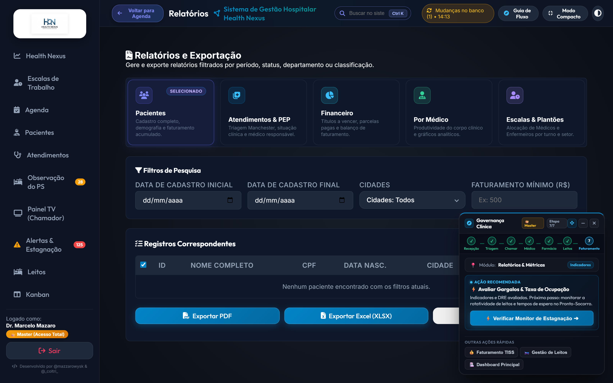
📈 Tabela de Painéis Analíticos Hospitalares
| Painel Analítico | Principais Indicadores Consolidados | Granularidade Temporal | Formatos de Exportação | Público Decisor |
|---|---|---|---|---|
| Pacientes | Cadastro completo, idade, cidade de residência e faturamento acumulado | Período / Cidades / Valor Mínimo | PDF Executivo / Excel / CSV | Recepção & Diretoria Assistencial |
| Atendimentos & PEP | Fila por status, gravidade Manchester, tipo e médico responsável | Admissão / Status / Manchester | PDF / Excel / CSV | Coordenação Médica & Enfermagem |
| Financeiro & Títulos | Receitas x Despesas, parcelas pagas, a vencer, vencidas e bonificadas | Vencimento / Categoria / Forma | PDF com DRE / Excel / CSV | Diretoria Financeira & Controladoria |
| Produtividade Médica | Consultas concluídas, atendimentos hoje, taxa de conclusão e gráficos | Mensal / Individual / Especialidade | PDF Confidencial / CSV | Direção Clínica & Comissão de Ética |
| Escalas & Plantões | Alocação de médicos e enfermeiros, setores, carga horária e status | Data do Plantão / Categoria | PDF / CSV | Gestão de Escalas & Recursos Humanos |
| Exames & Laudos (SADT) | Pedidos, itens por modalidade, taxa de laudos prontos, TAT médio e casos críticos | Período / Modalidade / Status / Prioridade / Conclusão / Setor / Médico | PDF Laudos / Excel / CSV | Coordenação SADT, Radiologia & Diretoria Clínica |
🔬 Módulo Analítico de Exames & Laudos (SADT) na Aba Relatórios (v2.9.33)
- Acesso Direto em 1 Clique: Disponível através do card
[ 🔬 Exames & Laudos ]no cabeçalho de seleção da aba de Relatórios. - Filtros Especializados de Diagnóstico:
- Modalidades: Laboratório Clínico, Radiologia / Raio-X, Métodos Gráficos (ECG) e Alta Complexidade (Tomografia / Ressonância).
- Status & Conclusões: Filtro cruzado entre estágio operacional (Concluído, Em Andamento, Solicitado) e resultado clínico (Normal, Alterado, Crítico).
- Filtros Organizacionais: Seleção rápida por Setor Solicitante (PS, UTI, Leitos, Consultórios) e por Médico Solicitante (com CRM).
- Quadro Executivo de Indicadores (KPIs):
- Total de Pedidos e Exames: Volume consolidado da instituição no período filtrado.
- Taxa de Laudos Prontos (%): Percentual de exames com laudo já emitido e assinado.
- Casos Críticos Sinalizados: Quantidade de resultados que exigem atenção médica imediata.
- Tempo Médio de Liberação (TAT): Giro médio de tempo entre a solicitação médica e o laudo liberado.
- Gráficos Dinâmicos Chart.js:
- Rosca de Modalidades: Visualização percentual entre exames de sangue, radiologia, ECG e tomografia.
- Barras de Setor: Ranking de áreas do hospital que mais demandam exames diagnósticos.
- Top 5 Exames Mais Solicitados: Destaque dos procedimentos com maior recorrência clínica.
🛠️ Filtros Inteligentes & Integração com Simulação de Dados (v2.9.32 / v2.9.33)
- Comportamento Padrão Inclusivo: Ao acessar o módulo ou após simular dados na aba de configurações, os seletores permanecem como "Todos" por padrão, exibindo todos os registros gerados sem descarte indevido.
- Geração Realista de Exames Mock: O gerador de dados simulados agora popula automaticamente dezenas de pedidos de exames com status variados (Concluído, Em Andamento, Solicitado), laudos normais/críticos e tempos de atendimento realistas.
- Resiliência Local-First: Em caso de oscilação de rede ou renovação de cache, o módulo de relatórios lê diretamente a base local do hospital (
localDB), assegurando integridade e agilidade analítica.
13. Painel de Chamada TV & Sala de Espera
O Painel TV opera em tela cheia na sala de espera para direcionamento sonoro e visual dos pacientes por viva-voz sintetizado.
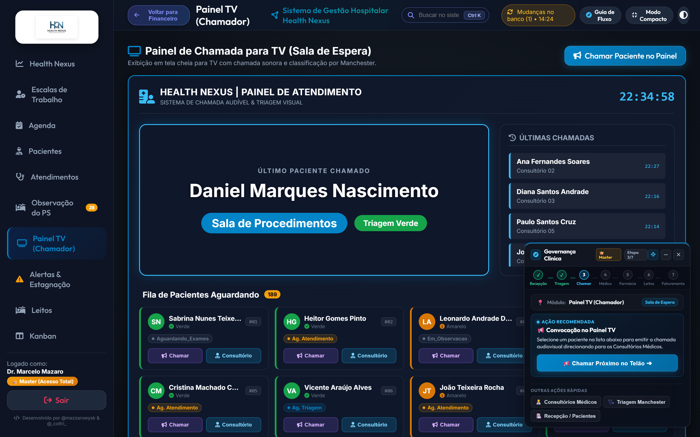
📺 Tabela de Elementos do Painel TV
| Componente da Tela | Função Visual / Sonora | Tecnologia Envolvida | Benefício para o Paciente |
|---|---|---|---|
| Card do Chamado Principal | Exibe nome em letras garrafais e sala/consultório de destino | Animação CSS Pulse + Glassmorphism | Visibilidade nítida mesmo a grandes distâncias no saguão. |
| Sintetizador de Voz (Viva-Voz) | Pronuncia o nome do paciente e a sala em áudio claro | Web Speech Synthesis API (pt-BR) | Acessibilidade total para deficientes visuais e idosos. |
| Carrossel dos Últimos 5 Chamados | Lista lateral com histórico de chamadas recentes | Renderização reativa em tempo real | Permite conferir o consultório mesmo se perdeu o primeiro anúncio. |
| Relógio & Data em Tempo Real | Horário sincronizado e dados da instituição | Javascript Date Engine | Orientação temporal e conforto na espera assistencial. |
🎛️ Tabela de Controles e Modos do Chamador TV
| Ação / Controle | Atalho / Botão | Descrição da Operação | Perfil Autorizado |
|---|---|---|---|
| Modo Tela Cheia | Tecla F11 ou Botão Fullscreen |
Oculta barras de navegação do browser para uso em Smart TVs. | Qualquer colaborador |
| Testar Voz do Sistema | Botão "Testar Voz" | Executa áudio de teste calibrando volume e velocidade da voz pt-BR. | Recepção / TI |
| Repetir Última Chamada | Botão "Chamar Novamente" | Dispara novamente o sinal sonoro e voz do paciente atual. | Recepção / Triagem |
| Calibração de Chime | Seletor de Áudio | Escolhe entre sinal sonoro Clássico, Suave ou Emergencial. | TI / Recepção |
14. Central de Estagnação & Aprovações de Acesso
Painel de controle de gargalos clínicos e permanência de pacientes em observação no PS acima de 12 horas.
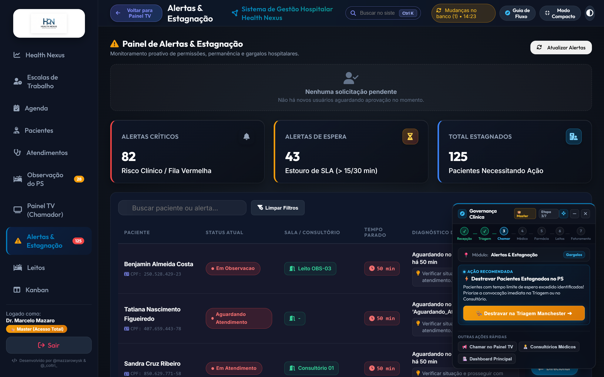
⏳ Tabela de Níveis de Alerta de Permanência (PS 12h)
| Nível de Alerta | Faixa de Tempo | Cor Visual do Badge | Risco Assistencial | Ação Obrigatória da Equipe |
|---|---|---|---|---|
| Estável | Menos de 10 horas | 🔵 Azul | Quadro dentro da janela esperada de observação | Reavaliação clínica regular e checagem de exames. |
| Atenção | Entre 10h e 12 horas | 🟡 Amarelo | Risco iminente de ultrapassar teto de observação | Definir desfecho (alta médica ou solicitação de leito). |
| Crítico (Estagnado) | Mais de 12 horas | 🔴 Vermelho Pulsante | Gargalo assistencial estagnado | Reatribuição imediata de consultório ou vaga urgente em leito. |
🛡️ Tabela de Gestão de Aprovação de Acessos (RBAC)
| Campo / Operação | Descrição | Regra de Negócio | Ação do Administrador Master |
|---|---|---|---|
| Solicitação Pendente | Usuário cadastrado aguardando liberação | Permissão inicial bloqueada até auditoria | Visualiza login, cargo solicitado e data de cadastro. |
| Aprovar Usuário | Libera acesso conforme o perfil solicitado | Ativa credenciais no banco local e nuvem Turso | Clique em Aprovar Acesso (emite toast verde de sucesso). |
| Recusar / Modificar | Rebaixa o perfil para acesso padrão | Impede acesso a privilégios administrativos | Define cargo restrito ou cancela o cadastro do operador. |
15. Configurações, Backup e Sincronização em Nuvem (Turso Cloud)
Administração global do sistema, parâmetros do banco local-first e sincronização distribuída com Turso Cloud DB.
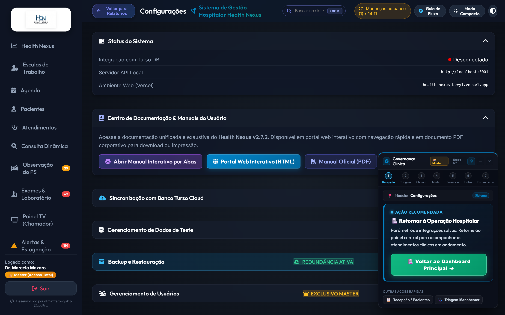
☁️ Tabela de Recursos de Sincronização e Banco de Dados
| Funcionalidade | Mecanismo | Comportamento Técnico | Vantagem Operacional |
|---|---|---|---|
| Dual-Pipeline Sync | Proxy local + Fallback HTTP nativo | Se a rota primária falhar, tenta rota direta Turso Cloud | 99.9% de disponibilidade em qualquer infraestrutura. |
| Backup Manual JSON | Download direto de arquivo .json | Serializa todo o banco de dados e salva no computador | Cópia de segurança física independente de servidores. |
| Restauração de Backup | Upload de arquivo .json estruturado | Valida o esquema e sobrescreve o banco com segurança | Recuperação rápida em caso de troca de estação de trabalho. |
| Gerar Simulação (300+) | Gerador estocástico avançado | Cria 35+ pacientes, 35 internações, médicos e leitos | Ambiente completo e realista para treinamento e testes. |
| Limpeza com Preservação | Soft-reset seguro | Limpa prontuários preservando contas de usuários essenciais | Reinício de base sem perda de acessos da equipe médica. |
16. Sistema de Avisos, Notificações & Toasts
Sistema centralizado de alertas visuais instantâneos (Toasts) e direcionamento assistencial reativo.
🔔 Tabela de Tipos de Notificações do Sistema
| Tipo de Aviso | Cor / Ícone | Duração em Tela | Gatilho Típico | Comportamento Interativo |
|---|---|---|---|---|
| Sucesso (Success) | 🟢 Verde (#10b981) |
3,5 segundos | Paciente admitido, consulta salva, receita emitida | Desaparece automaticamente com animação fade-out. |
| Alerta (Warning) | 🟡 Amarelo (#f59e0b) |
5,0 segundos | Medicamento abaixo do estoque, permanência >10h | Alerta a equipe sobre necessidade de atenção imediata. |
| Erro (Danger) | 🔴 Vermelho (#ef4444) |
6,0 segundos | Falha de validação, interação medicamentosa grave | Exige confirmação ou ajuste imediato pelo operador. |
| Notificação de Fluxo | 🟣 Roxo / Gradiente | Fixa até ação | Paciente chamado para consultório ou internado | Botão "IR PARA A ABA ➔" com rolagem suave e efeito Glow. |
17. Tabela de Máscaras, Atalhos & Teclas de Atalho
⌨️ Tabela de Teclas de Atalho do Teclado
| Tecla de Atalho | Contexto de Uso | Função Executada no Sistema |
|---|---|---|
Ctrl + K (ou Cmd + K) |
Em qualquer tela do sistema | Foca a Busca Global Spotlight no topo da tela. |
Alt + M |
Em qualquer tela do sistema | Retorna ao Manual do Usuário no tópico pesquisado com efeito pulsar. |
Alt + N |
Aba Atendimentos / Agenda | Abre o modal de Nova Admissão / Agendamento. |
Alt + Seta Esquerda |
Em qualquer tela do sistema | Volta para a aba visualizada anteriormente no histórico. |
F11 |
Aba Painel TV | Alterna para o Modo Fullscreen para monitores de sala de espera. |
Esc |
Em qualquer modal aberto | Fecha o modal ativo e retorna ao painel sem salvar dados parciais. |
📝 Tabela de Máscaras e Formatos de Entrada de Dados
| Campo Clínico / Cadastral | Máscara de Entrada | Expressão / Formato | Exemplo de Preenchimento Válido |
|---|---|---|---|
| CPF | 000.000.000-00 |
11 dígitos numéricos com dígitos verificadores | 341.890.128-44 |
| Cartão SUS (CNS) | 000 0000 0000 0000 |
15 dígitos padrão Ministério da Saúde | 700 1234 5678 9012 |
| Pressão Arterial (PA) | 000/00 |
Milímetros de mercúrio (mmHg) sistólica/diastólica | 120/80 |
| Telefone / WhatsApp | (00) 00000-0000 |
DDD de 2 dígitos + número com 9 dígitos | (11) 98765-4321 |
| CEP | 00000-000 |
8 dígitos com busca automática ViaCEP | 01310-100 |
| Registro Médico (CRM) | 000000/UF |
Número do conselho + sigla do estado federativo | 123456/SP |
| Código TUSS ANS | 00000000 |
Código terminológico unificado de 8 dígitos | 10101012 (Consulta em consultório) |
18. Solução de Dúvidas Frequentes & Erros Comuns (FAQ)
❓ Tabela de Diagnóstico e Resolução de Dúvidas
| Dúvida / Situação Operacional | Causa Raiz | Procedimento de Resolução Passo a Passo |
|---|---|---|
| Como recuperar a senha de um médico ou operador? | Esquecimento de senha ou bloqueio | Vá em Configurações → Usuários, localize o usuário e clique no ícone Chave (Reset Senha) para definir nova senha. |
| O Painel TV não está emitindo som na chamada | Bloqueio de autoplay do navegador | Clique uma vez em qualquer parte da tela da TV para conceder permissão de áudio à Web Speech API. |
| O lote de guias TISS deu divergência na exportação | Código TUSS ou carência ausente | Acesse a aba Faturamento TISS, clique em 🛡️ Auditar Guia para identificar e corrigir os campos glosados. |
| Como dar alta a um paciente e liberar o leito? | Finalização do ciclo de internação | No card do leito ocupado, clique em Alta Hospitalar. O sistema move o leito para Higienização e após limpeza clique em Liberar Leito. |
| O gráfico de fluxo Kanban está zerado no Dashboard | Falha de sincronização localDB | O sistema agora conta com auto-seed sob demanda. Pressione Ctrl + Shift + R para atualizar a página. |
| Como imprimir a receita médica com QR Code CFM? | Conclusão do atendimento PEP | No modal do PEP, clique em Imprimir PDF. O documento é gerado com hash SHA-256 e QR Code de validação pública. |
| O paciente não aparece na busca rápida Spotlight | Digitação incompleta ou lixeira | Digite ao menos 3 letras do nome ou os 6 primeiros dígitos do CPF; confira se o paciente não está na Lixeira de Pacientes. |
| A sincronização com a nuvem Turso exibe alerta amarelo | Instabilidade temporária de rede | O sistema aciona o Fallback HTTP nativo automaticamente. Se persistir, clique em "Sincronizar Agora" nas Configurações. |
19. Novas Funcionalidades Avançadas Assistenciais & Tecnológicas (v2.8.0) 🚀
O Health Nexus v2.8.0 consolida 6 pilares de alta complexidade hospitalar e inteligência clínica:
⏱️ Tabela de Metas Clínicas dos Protocolos de Emergência Aguda
| Protocolo de Emergência | Gatilhos de Triagem Manchester | Meta Crítica de Tempo | Exames e Intervenções Obrigatórias |
|---|---|---|---|
| IAM com Supra (Infarto) | "Dor torácica típica", "irradiação para MSE", "sudorese fria" | Porta-ECG: < 10 min Porta-Balão: < 90 min |
ECG 12 derivações imediato, Troponina quantitativa, AAS mastigável, contato com hemodinâmica. |
| AVC Isquêmico Agudo | "Déficit neurológico focal", "assimetria facial", "disartria" | Porta-TC: < 20 min Janela Trombolítica: 4,5h |
Tomografia computadorizada de crânio sem contraste, glicemia capilar e cálculo de escore NIHSS. |
| Sepse / Choque Séptico | "Hipotensão arterial", "taquipneia", "febre/hipotermia", "leucocitose" | Pacote da 1ª Hora | Coleta de 2 pares de hemoculturas, dosagem de lactato sérico, antibiótico de amplo espectro e ressuscitação volêmica (30 ml/kg). |
🩻 Tabela de Ferramentas do Visualizador PACS / DICOM Integrado
| Ferramenta no Canvas | Ícone / Atalho | Função Operacional | Indicação Clínica |
|---|---|---|---|
| Ajuste de Brilho & Contraste | ☀️ / Botão Windowing | Ajusta a janela de atenuação Hounsfield | Diferenciação entre partes moles, parênquima pulmonar e estruturas ósseas. |
| Zoom & Panorâmica (Pan) | 🔍 / Roda do Mouse + Arraste | Amplia regiões anatômicas suspeitas | Identificação de microfraturas, nódulos ou linhas de pneumotórax. |
| Inversão de Cores (Negativo) | 🔄 / Botão Inverter | Alterna entre fundo preto e branco radiológico | Realce de contornos vasculares e densidades tênues. |
| Régua Milimétrica Calibrada | 📏 / Ferramenta Caliper | Mede distâncias em milímetros reais na imagem | Mensuração precisa de diâmetro de lesões, cálculos e desvios de linha média. |
🛡️ Tabela de Validações do Motor Anti-Glosa TISS / ANS 4.01.00
| Regra de Auditoria | Código de Validação | Falha Detectada | Ação Corretiva do Sistema |
|---|---|---|---|
| Validação de Matrícula | GLOSA-1001 |
Número de carteirinha com dígitos inválidos | Bloqueia exportação do lote até correção do cadastro do beneficiário. |
| Compatibilidade TUSS x Especialidade | GLOSA-2045 |
Procedimento cirúrgico prescrito por especialidade incompatível | Alerta o faturamento para reclassificar o prestador executante. |
| Justificativa Clínica de SADT | GLOSA-3012 |
Exame de alta complexidade sem CID-10 associado | Exige vinculação de hipótese diagnóstica no prontuário antes do faturamento. |
| Carência Contratual | GLOSA-4099 |
Procedimento realizado antes do término de carência | Sinaliza a guia como Pendente de Recurso Administrativo. |
20. Smart Flow Guide — Adaptação por Aba, Controle de Foco & Desmarcação (v2.9.9) & Painel Lateral Acoplado 🧭
O Smart Flow Guide funciona como a espinha dorsal de governança assistencial do Health Nexus, acompanhando a equipe em qualquer tela do complexo hospitalar. Na versão 2.9.9, ele aprimora a inteligência de contexto assistencial e o gerenciamento de foco: as recomendações adaptam-se de forma dinâmica e imediata à aba em que o operador está navegando, com controle total de foco para selecionar ou desmarcar pacientes a qualquer momento, sem retenção persistente indesejada.
🎯 Controle de Foco & Desmarcação Rápida de Paciente (v2.9.9)
- Isolamento de Escopo por Sessão: O contexto do paciente em atendimento é armazenado exclusivamente no escopo da sessão ativa (
sessionStorage), impedindo que pacientes de atendimentos antigos continuem em evidência ou reapareçam após recarregar a tela ou realizar um novo login. - Botão Direto "✕ Desmarcar": Diretamente no cabeçalho do card do paciente no Smart Flow Guide, a equipe dispõe do botão
✕ Desmarcar. Com um único clique, o foco no paciente é liberado, todos os halos pulsantes são removidos e o guia retorna instantaneamente para as recomendações da visão geral daquela aba. - Navegação Limpa entre Abas: Quando nenhum paciente está ativamente em foco, a alternância entre abas não projeta destaques em tabelas ou quadros Kanban, preservando a visualização limpa do censo e das filas hospitalares.
🧭 Adaptação Omnidirecional Estrita por Aba Ativa (v2.9.8)
Ao navegar pelo menu lateral ou pelos atalhos do sistema, o card de fluxo reorganiza suas orientações para a operação daquela tela específica:
- Dashboard Principal: Apresenta visão global do plantão, sugerindo acolhimento de novos pacientes na Recepção ou a próxima conduta para o paciente ativo em atendimento.
- Recepção & Pacientes: Sugere o cadastro de admissão, busca rápida por CPF ou encaminhamento do paciente recém-acolhido para a Triagem Manchester.
- Triagem Manchester: Destaca a aferição de sinais vitais e classificação de gravidade Manchester, com atalho direto para chamar na TV caso a convocação sonora ainda não tenha sido emitida.
- Painel TV (Chamador): Foca na convocação audiovisual com sinal sonoro, direcionando para a Sala de Triagem ou para o Consultório indicado.
- Consultórios Médicos: Conduz para o atendimento médico e abertura da Folha de Evolução SOAP no Prontuário Eletrônico (PEP), alertando com segurança caso o paciente ainda não tenha passado pela triagem prévia.
- Farmácia Hospitalar: Prioriza a validação técnica no circuito fechado de medicamentos e a liberação de fármacos prescritos.
- Gestão de Leitos: Apresenta o censo hospitalar e orienta a internação em leito vago (enfermaria/UTI) ou a evolução clínica beira-leito.
- Kanban Hospitalar: Foca no acompanhamento da linha de cuidado multidisciplinar, metas de permanência e estimativa de alta médica.
- Faturamento & TISS: Guia a auditoria de procedimentos e fechamento de guias e lotes XML no padrão TISS 4.01 após a alta.
- Agenda Médica, Escalas, Estagnação e Relatórios: Cada módulo possui orientações e botões próprios integrados ao fluxo do paciente ativo.
🏠 Inicialização Padrão no Dashboard & Consistência do Guia de Fluxo (v2.9.7)
Ao entrar no complexo hospitalar — seja no primeiro acesso, após novo login ou na recuperação de sessão —, o sistema abre obrigatoriamente no Dashboard Principal (Painel Geral):
- Visão Imediata do Plantão: A equipe já inicia o turno com os indicadores clínicos, volume de atendimentos e ocupação hospitalar consolidados na tela.
- Comportamento Idêntico e Integrado do Card de Fluxo: O Smart Flow Guide se posiciona de forma consistente, exibindo a etapa inicial de acolhimento (Recepção), orientando o cadastro de novos pacientes ou localização na fila, mantendo preservada a sua preferência de fixação (painel acoplado ou card flutuante).
- Retorno Rápido ao Dashboard: Clicar na logo da instituição ou no título principal Health Nexus no topo do sistema retorna instantaneamente ao Dashboard a partir de qualquer módulo operacional.
🔍 Busca Global Inteligente (Spotlight / Ctrl + K) com Alinhamento Responsivo (v2.9.10)
- Largura Ampla & Confortável: O menu suspenso de busca abre com largura otimizada (
540px, limitado à largura da tela), garantindo que os cards do Nexus AI Copilot, botões de ação clínica, atalhos de abas e pacientes apareçam perfeitamente diagramados, sem quebra forçada de linhas ou barras de rolagem horizontais. - Centralização Dinâmica com Margens de Segurança: A janela de resultados calcula dinamicamente a posição horizontal do campo de pesquisa e centraliza-se automaticamente, mantendo espaçamento seguro em relação às bordas da tela.
- Adaptação Responsiva do Cabeçalho: Quando o painel lateral de governança estiver acoplado à direita (
420px), o cabeçalho superior condensa automaticamente subtítulos e rótulos redundantes, priorizando o campo de pesquisa e garantindo visualização limpa e desobstruída.
💡 Encaixe Magnético Neon & Adaptação Fluida de Layout ao Arrastar (v2.9.10)
O processo de acoplamento do Smart Flow Guide agora conta com uma experiência visual fluida, intuitiva e moderna:
- Aproximação e Ativação do Efeito Neon: Ao clicar e arrastar o card flutuante em direção ao terço direito da tela, a área de destino na lateral acende suavemente com um gradiente neon ciano translúcido, moldura luminosa e o badge luminoso Solte para Acoplar Painel.
- Sincronização Dinâmica do Badge: A mensagem indicativa em formato pílula neon acompanha em tempo real toda a movimentação vertical do card pelo cursor ou toque, posicionando-se sempre com elegância logo abaixo da base do card flutuante (com respiro de segurança de viewport para nunca ser cortada).
- Adaptação Orgânica do Sistema: Concomitantemente ao acendimento da área neon, todo o layout do sistema hospitalar (
.app-container) se contrai suavemente (curva de transiçãocubic-bezier(0.16, 1, 0.3, 1)), liberando antecipadamente os 420px necessários para o painel. Prontuários, tabelas e botões continuam totalmente operacionais, sem cortes ou sobreposições. - Feedback Tátil e Magnético no Card: O próprio card flutuante adquire um realce ciano sutil e uma leve inclinação de engajamento, indicando ao profissional que a zona de atração magnética está ativa.
- Retorno Elástico ao Recuar: Se o usuário decidir não acoplar e movimentar o card de volta para o centro da tela, a área neon se dissolve de forma limpa e o sistema expande novamente para a largura total.
- Encaixe Imediato e sem Saltos (Zero Layout Shift): Ao soltar o mouse ou toque dentro da zona iluminada, o card se transforma instantaneamente no Painel Lateral fixo em altura total (
100vh). Como o sistema já havia se adaptado durante o arraste, não ocorre nenhum salto visual abrupto na tela. - Botão de Acoplamento Rápido: Caso o usuário prefira não arrastar, o botão de fixação rápida no cabeçalho do card realiza a mesma transição fluida com um único toque.
🔄 Como Funciona o Desacoplamento (Undock) por Arrasto ou Clique
- Arrastar de Volta ao Centro: Para soltar o painel, basta clicar e segurar o cabeçalho do painel lateral e puxá-lo em direção ao centro da tela. O painel se transforma suavemente de volta no card flutuante leve, seguindo o cursor do mouse até onde você desejar posicioná-lo.
- Botão de Desacoplamento: Se preferir, basta clicar no ícone de desencaixe no topo ou no rodapé do painel lateral para retornar instantaneamente ao card compacto.
- Memorização de Preferência: Sua escolha (acoplado ou flutuante) fica salva no navegador, mantendo seu espaço de trabalho do jeito que você organizou mesmo após recarregar a página.
📋 Recursos Exclusivos do Painel Lateral Estendido
Quando acoplado à lateral, o Smart Flow Guide oferece uma visão panorâmica e imediata do plantão:
| Bloco de Informação | O que Apresenta | Ação Imediata com 1 Clique |
|---|---|---|
| Radar do Plantão ao Vivo | Total de pacientes na recepção, triagem, consultórios, observação e leitos vagos | Clicar em qualquer setor para abrir a fila correspondente |
| Paciente em Foco | Nome completo, idade, número de prontuário, tempo de espera e classificação de risco | Botão direto para abrir o Prontuário Eletrônico (PEP) ou chamar no Painel TV |
| Jornada de 7 Etapas | Linha do tempo visual do paciente: Entrada, Triagem, Fila Médica, Atendimento, Exames/Observação, Internação e Desfecho | Identificar gargalos e atrasos no fluxo do paciente |
| Próxima Conduta Recomendada | Instrução clara e objetiva sobre o próximo passo clínico ou administrativo | Redirecionamento com um toque para a tela de ação |
| Caminhos e Ações Disponíveis | Chips rápidos para prescrever, solicitar leito, transferir ou fechar atendimento | Abertura dos respectivos modais sem precisar procurar nos menus |
🧭 Harmonização Visual do Smart Flow Guide & Eliminação de Barras Cinzas Destoantes (v2.9.34)
Na versão 2.9.34, o Smart Flow Guide nos modos de fixação horizontal (barra inferior ou superior de Governança) passou por refinamento estético:
- Zero Scrollbars Cinzas Nativas: Eliminou-se a exibição da barra de rolagem cinza padrão de 17px do Windows com setas nos cantos que quebrava o visual moderno e escuro do sistema.
- Scrollbars Globais no Padrão do Sistema: Todas as áreas com rolagem no Health Nexus agora seguem a identidade visual do sistema: largura/altura ultrafina de 6px, fundo translúcido e indicador arredondado com realce ciano sutil ao passar o cursor, sem botões de seta legados.
- Rolagem Horizontal Inteligente por Roda do Mouse: Caso a janela seja redimensionada ou utilizada em telas compactas, o operador pode navegar lateralmente pelas 7 etapas hospitalares apenas girando a roda do mouse (
wheelhorizontal suave), com total ergonomia e sem ruído visual. - Espaçamento e Centralização Otimizados: Os nós e separadores de etapas foram calibrados para garantir encaixe fluido e centralizado em monitores de qualquer resolução.
💡 Ação Recomendada em Detalhe na Barra Horizontal (v2.9.35 / v2.9.36)
Nas versões 2.9.35 e 2.9.36, a barra de Governança horizontal (fixada no topo ou na base) passou por um aprimoramento ergonômico completo:
- Card de Ação Completo: Além do botão de execução, a barra traz o bloco moldurado com a badge
• AÇÃO RECOMENDADA(com ponto luminoso pulsante), o título completo da conduta (ex:📑 Início do Fluxo: Cadastrar Novo Paciente) e a descrição clínica detalhada explicando o porquê daquela ação e o benefício assistencial. - Tipografia Ampliada para Fácil Leitura (v2.9.36): Título ampliado para
0.88remem branco nítido, descrição em0.76remclaro (#e2e8f0) com entrelinhas arejadas, largura expandida para até440pxde texto e altura da barra calibrada para86px, assegurando leitura imediata sem esforço visual. - Padronização de Ícone Único no Botão Verde (+ Único) (v2.9.36): Eliminação de duplicações de símbolos, garantindo estritamente 1 único sinal de mais
[ ➕ Cadastrar Novo Paciente Agora ➔ ]. - Equiparação Total de Contexto: A equipe clínica e administrativa conta com a mesma clareza operacional independentemente da posição de fixação escolhida (lateral direita, esquerda, topo ou base).
20. 🏢 Consulta Dinâmica Multi-Modalidade (Aba Lateral Dedicada), Prontuário Único SUS & Etiquetas Térmicas (v2.9.24)
20.1. Módulo de Consulta Dinâmica de Atendimentos (Aba Lateral Exclusiva)
Inspirada nos sistemas legados hospitalares e adaptada à agilidade do Health Nexus, a Consulta Dinâmica agora conta com uma aba exclusiva e dedicada no menu lateral de navegação (fa-magnifying-glass-chart), posicionada logo abaixo de Atendimentos. Essa mudança garante visualização em tela cheia de todas as passagens do hospital, sem depender de janelas modais e sem sofrer cortes ou sobreposição pelo painel lateral de governança:
- Acesso Direto pelo Menu Lateral: Clique no item
Consulta Dinâmicana barra de navegação esquerda a qualquer momento para abrir o painel analítico completo. - Atalho na Central de Atendimentos: O botão
🔍 Consulta Dinâmicapermanece disponível no cabeçalho do Kanban de atendimentos, funcionando como atalho rápido que direciona instantaneamente para a aba dedicada. - Cards Métricos no Topo (Filtro Rápido): Contadores clicáveis de Total Geral,
66 - Pronto Socorro,35 - Internação,Ambulatório GeraleSADT / Paciente Externopara filtrar o grid com um toque. - Filtros Combinados: Busca por Nome ou CPF do paciente, Médico Responsável, Especialidade, Setor Hospitalar, Convênio e Ordenação cronológica decrescente ou crescente.
- Grid Assistencial em Tela Cheia: Exibição ampla de Código do Atendimento, Modalidade, Paciente & CPF, Convênio, Setor/Leito, Médico & CRM, Classificação de Risco e Status da Passagem.
- Ações Imediatas:
Evoluir / PEP: Abre instantaneamente a folha de evolução SOAP e prescrição.Histórico: Acessa a linha do tempo assistencial e histórico de internações.Imprimir PEP: Gera o prontuário oficial consolidado em PDF.Etiqueta: Abre o modal de emissão de etiquetas térmicas (pulseiras e tubos).Exportar PDF / Relatório: Exporta relatório executivo completo da pesquisa.
20.2. Prontuário Único SUS: ID CROSS, Pasta Arquivo e Naturalidade
O cadastro de pacientes e o cabeçalho assistencial foram alinhados com o padrão do SUS do Estado de São Paulo:
- ID Paciente CROSS (Regulação Estadual): Código identificador de encaminhamento e vaga regulada via Central de Regulação de Ofertas de Serviços de Saúde (CROSS).
- Nº da Pasta / Arquivo Físico: Identificação de prontuários em papel e caixas de arquivamento hospitalar legado.
- Naturalidade & RG: Cidade/UF de nascimento e registro geral para integração com prontuário civil e certidões.
- Exibição Transversal: Presente no cadastro de pacientes, no card de identificação do histórico clínico e no cabeçalho impresso do PDF do PEP.
20.3. Emissão de Etiquetas Térmicas Hospitalares
O Health Nexus disponibiliza um módulo de impressão direta em impressoras térmicas padrão (Argox, Zebra, Elgin) com diagramação precisa:
- Pulseira do Paciente (100x30mm): Contém Nome Completo em destaque, Data de Nascimento, Idade, CPF, Sexo, Convênio, Código do Atendimento, QR Code de segurança e Código de Barras Code-128 legível por leitores ópticos.
- Etiquetas de Amostras / Tubos (50x30mm): Compacta para tubos de sangue, urina e frascos de biópsia, contendo Identificador do Atendimento, Nome do Paciente, Data da Coleta e Código de Barras.
20.4. Disposição Inteligente de Modais com o Painel Lateral Acoplado
Todas as janelas e modais do sistema contam com ajuste dinâmico ao Smart Flow Guide acoplado:
- Área Útil Preservada: Quando o painel lateral direito estiver acoplado (
420px), o modal calcula seu centro e largura máxima considerando estritamente a área visível do sistema (calc(100vw - 420px)). - Sem Ocultações: O botão de fechar no canto superior direito, os botões de ação rápida e a tabela de dados permanecem 100% visíveis e confortáveis para o usuário, eliminando cortes ou sobreposições.
- Scroll Horizontal Seguro: Tabelas densas contam com barra de rolagem horizontal nativa suave para navegadores em notebooks e monitores de qualquer resolução.
22. 💊 Farmácia & Estoque Hospitalar: Catálogo Essencial Abastecido, Circuito Fechado & KPIs em Tempo Real (v2.9.27)
A versão 2.9.27 resolveu de ponta a ponta o abastecimento, a visualização e a governança da farmácia hospitalar, assegurando que o sistema já inicialize totalmente operacional para o corpo clínico e farmacêutico:
22.1. Catálogo Pré-Carregado com 35 Medicamentos Hospitalares Essenciais
Eliminou-se a ocorrência de farmácia vazia ou desabastecida. O sistema agora conta com um rol abrangente pré-configurado contendo:
- Antibióticos de Amplo Espectro e Reserva: Amoxicilina+Clavulanato, Ceftriaxona 1g, Meropenem 1g, Vancomicina 500mg, Ciprofloxacino 500mg, Azitromicina 500mg.
- Analgésicos, Anti-inflamatórios e Opioides: Dipirona 500mg/ml, Paracetamol 750mg, Cetoprofeno 100mg, Tramadol 50mg/ml, Morfina 10mg/ml (entorpecente controlado).
- Sedativos, Hipnóticos e Psicotrópicos: Diazepam 10mg/2ml, Midazolam 5mg/ml, Fentanil 0,05mg/ml.
- Cardiovasculares e Antitrombóticos: Captopril 25mg, Losartana 50mg, Amiodarona 50mg/ml, Enoxaparina 40mg/0,4ml, Heparina Sódica 5.000 UI/ml.
- Suporte Respiratório e Antialérgicos: Salbutamol Spray 100mcg, Prednisona 20mg, Hidrocortisona 500mg, Dexametasona 4mg/ml, Prometazina 50mg/2ml.
- Gastroproterores e Antieméticos: Omeprazol 40mg, Ondansetrona 8mg/4ml, Metoclopramida 10mg/2ml.
- Controle Glicêmico & Metabólico: Insulina Regular 100 UI/ml, Insulina NPH 100 UI/ml.
- Fluidos Parenterais e Eletrólitos: Soro Fisiológico 0,9% 500ml, Ringer com Lactato 500ml, Soro Glicosado 5% 500ml, Cloreto de Potássio 19,1%, Glicose 50% 10ml.
Cada fármaco já possui dados reais de Lote, Data de Validade (2026 a 2028), Estoque Atual, Estoque Mínimo de Segurança, Valor Unitário (R$) e Status do Lote (Regular, Abaixo do Mínimo ou Crítico).
22.2. Abertura Direta no Estoque Central & Navegação por Sub-Abas
Ao clicar na aba Farmácia, o sistema agora exibe diretamente a tela do Estoque Central & Lotes, garantindo acesso imediato à lista de insumos sem passos adicionais.
- A navegação entre o Estoque Central & Lotes e a Fila de Prescrições Hospitalares conta com botões destacados e badges numéricos informando em tempo real a quantidade de itens em estoque e o total de prescrições aguardando dispensação.
22.3. KPIs em Tempo Real no Cabeçalho
Os 4 cartões analíticos do topo da farmácia são calculados dinamicamente com base nos registros ativos:
Total de Medicamentos: Quantidade total de fármacos cadastrados.Estoque Crítico: Alerta com contagem de produtos que atingiram ou caíram abaixo do estoque mínimo.Unidades Físicas: Somatório de ampolas, caixas, frascos e bolsas existentes fisicamente no hospital.Valor em Estoque: Patrimônio total avaliado em reais com base nos preços de aquisição.
22.4. Circuito Fechado de Prescrições Hospitalares
A sub-aba da Fila de Prescrições já vem alimentada com prescrições ativas para pacientes internados em leitos de UTI, Observação e Enfermarias, permitindo à equipe de farmácia simular e executar o fluxo de conferência de lote, validação de aprazamento e dispensação beira-leito.
22.5. Rotina de Auto-Cura e Botão "🌱 Restaurar Estoque Padrão"
- Auto-Cura na Inicialização: Ao carregar a aplicação, se for detectado que a tabela de medicamentos está vazia, o sistema efetua o povoamento preventivo de forma transparente.
- Ação Rápida de 1 Clique: No cabeçalho da farmácia, o botão
🌱 Restaurar Estoque Padrãopermite repovoar ou restabelecer os 35 medicamentos com um simples toque caso algum usuário tenha esvaziado a base local.
23. 🔬 Central de Exames & Laboratório (SADT): Aceite Técnico, Laudos & Relatórios Gerenciais (v2.9.29)
A versão 2.9.29 entrega a central exclusiva de Exames & Laboratório (SADT - Serviço de Apoio Diagnóstico e Terapêutico), estabelecendo o ciclo fechado de solicitação, aceite, digitação de laudo e devolução direta ao prontuário médico:
23.1. Visão Geral da Central SADT & Acesso Rápido
- Menu Lateral Dedicado: A aba Exames & Laboratório (
fa-microscope) conta com badge azul destacando a quantidade de pedidos que aguardam aceite do setor técnico. - Perfis Autorizados: Acesso liberado para Biomédicos, Farmacêuticos, Técnicos de Laboratório, Médicos Radiologistas, Equipe de Enfermagem e Administradores.
- 4 Indicadores em Tempo Real no Topo:
Aguardando Aceite: Total de requisições pendentes de validação técnica.Em Execução / Coleta: Exames aceitos e em fase de coleta ou realização do exame de imagem.Laudados & Devolvidos: Total de exames com laudo concluído e integrados de volta ao PEP.Taxa de Liberação: Percentual de cumprimento dos pedidos solicitados.
23.2. Fila de Trabalho (Bancada Técnica) & Aceite de Pedidos
Ao abrir a bancada de trabalho, o setor técnico visualiza os cards de cada requisição hospitalar:
- Rastreabilidade Imediata: Cada cartão exibe com clareza:
- Paciente: Nome completo, idade, número de prontuário e leito (quando internado).
- Médico Solicitante & CRM: Identificação completa de quem prescreveu o exame.
- Setor de Origem: Pronto-Socorro (PS), UTI Geral, Consultórios Eletivos, Leitos de Internação ou Observação.
- Data, Hora e Tempo Decorrido: Permite priorizar exames de urgência e emergência dentro do SLA.
- Aceite Técnico & Confirmação Visual Inteligente (v2.9.30):
- Aceite em Lote: O botão azul
✓ Aceitar Todosaprova todos os exames pendentes de uma só vez. - Selo Subentendido de Aceite Concluído: Assim que acionado, o botão de ação desaparece e é automaticamente substituído pelo selo verde de confirmação
[✓ Aceito (HH:MM)], deixando claro e evidente que a bancada técnica já registrou o aceite e que o pedido está em andamento. - Chips de Status por Exame: Cada exame na lista ganha um marcador visual:
[✓ Aceito / Em Análise](azul),[Aguardando Aceite](âmbar) ou[✓ Laudado](verde). - Aceite Individual: Possibilidade de aceitar exame por exame em requisições mistas antes de laudar.
- Aceite em Lote: O botão azul
- Impressão da Requisição de Bancada: O botão de impressora gera a guia de trabalho para apoiar a coleta de sangue beira-leito ou o posicionamento na sala de radiologia.
23.3. Digitação de Laudos & Devolução Automática ao Prontuário
Quando o exame é concluído, o profissional clica em ✍️ Digitar Laudo:
- Modelos Pré-Formatados Inteligentes:
- Exames de Imagem (Raio-X, Tomografia, Ultrassom): O sistema carrega a estrutura padrão de radiologia com Técnica, Análise Comparativa, Achados Radiológicos e Impressão Diagnóstica.
- Exames Laboratoriais (Hemograma, Bioquímica, Eletrólitos): O modal sugere a tabela com parâmetros e valores de referência.
- Conclusão Diagnóstica & Responsável Técnico: Campo específico para a assinatura técnica do biomédico ou radiologista com número de conselho (CRBM / CRM).
- Devolução Instantânea:
- O laudo é gravado no encontro clínico do paciente no PEP.
- O médico assistente visualiza o badge verde
✓ Laudo Liberadocom prévia do texto direto na evolução clínica e no histórico de exames. - No painel Kanban do Pronto-Socorro, o paciente recebe o aviso visual
✅ Laudos Prontos — Chamar para Conduta, permitindo reavaliação médica ágil e reduzindo o tempo de espera no hospital.
23.4. Relatórios & Indicadores SADT (Analytics)
A sub-aba Relatórios & Indicadores oferece à diretoria clínica e gerência de diagnóstico:
- Demandas por Modalidade: Divisão visual entre Análises Clínicas, Radiologia Convencional (Raio-X), Tomografia, Ultrassonografia e Eletrocardiograma.
- Distribuição por Setor de Origem: Comparativo de requisições vindas do Pronto-Socorro, UTI, Enfermaria e Consultórios.
- Médicos Mais Demandantes: Relação dos profissionais com maior número de solicitações e respectivos percentuais de laudos emitidos.
- Top 10 Exames Mais Solicitados: Gráfico de barras indicando os exames de maior volume no período.
- Emissão de Relatório Oficial: O botão
🖨️ Imprimir Relatório SADTgera uma folha executiva em PDF para reuniões de comissão hospitalar e prestação de contas SUS/ANS.
23.5. Janelas Flutuantes de Confirmação & Alertas Padronizados (v2.9.31)
Com a versão 2.9.31, os pop-ups nativos do navegador foram completamente substituídos pelas janelas flutuantes customizadas do próprio Health Nexus (showCustomConfirm e showCustomAlert):
- Identidade Visual Hospitalar: Telas de confirmação (como a confirmação de Alta da Observação no Pronto-Socorro e as altas no Kanban) agora utilizam efeito de vidro fosco (backdrop blur 10px), paleta escura com bordas iluminadas e cabeçalhos com cores temáticas:
- Verde hospitalar (
#10b981) para confirmações de alta médica e conclusões clínicas; - Âmbar (
#f59e0b) para avisos e condutas que exigem atenção; - Vermelho (
#ef4444) para ações críticas ou exclusões; - Azul institucional (
#0284c7) para mensagens informativas.
- Verde hospitalar (
- Destaque Assistencial: A mensagem exibe o nome do paciente em destaque e explica de forma clara os efeitos da ação (registro de data, horário e desfecho no prontuário).
- Acessibilidade e Rapidez: O profissional pode pressionar
Enterpara confirmar imediatamente ouEscapepara fechar e cancelar, além de poder clicar no botão de fechar (x) ou fora do modal.
24. 🧭 Smart Flow Guide — Guia de Fluxo Inteligente & Governança Clínica (v2.9.37)
O Smart Flow Guide é o copiloto de governança assistencial do Health Nexus, projetado para orientar os profissionais de saúde e recepcionistas passo a passo pela jornada do paciente dentro do hospital.
24.1. Posicionamento e Acoplamento Flexível em 4 Direções
O Guia de Fluxo oferece ancoragem ergonômica que se adapta ao fluxo de trabalho do operador:
- Lateral Direita ou Esquerda (Painel Vertical): Ocupa 420px na borda selecionada, com visão completa do paciente ativo, histórico de etapas, radar hospitalar e atalhos rápidos.
- Topo ou Base (Barra Cockpit Horizontal): Altura calibrada de 86px com stepper horizontal das 7 etapas hospitalares e Card de Ação Recomendada em detalhe com botão verde de 1-clique.
- Card Flutuante Livre: Arraste livre pelo cabeçalho para qualquer ponto da tela.
- Seletor Rápido de Fixação: Através do ícone de ancoragem (
hn-fg-dock-picker-btn), o usuário escolhe a posição com 1 clique ou simplesmente arrasta a alça do painel em direção à borda desejada.
24.2. Suporte Integral ao Modo Claro (Light Theme)
Na versão 2.9.37, o Smart Flow Guide recebeu harmonização visual completa para o Modo Claro:
- Eliminação de Fundo Escuro Destoante: Ao alternar para o tema claro pelo botão de tema no topo, o painel do fluxo transiciona instantaneamente para um visual clean com fundo em vidro fosco claro (
rgba(255, 255, 255, 0.96)). - Contraste e Legibilidade Hospitalar: Títulos, badges e descrições das condutas ganharam tipografia nítida em tons de ardósia escuro (
#0f172ae#334155), perfeitamente legíveis mesmo sob luz solar ou iluminação hospitalar intensa. - Card de Ação Recomendada: Fundo em suave gradiente azul-celeste (
#f0f9ffa#e0f2fe), com borda sutil e botão verde de avanço de fluxo ([ ➕ Cadastrar Novo Paciente Agora ➔ ]) mantido em evidência. - Radar e Subcards Integrados: Os cartões de censo do radar e seleção de pacientes ganharam fundo branco puro, sombras suaves e métricas coloridas de alta legibilidade.
24.3. Tipografia Substancialmente Ampliada & Alto Contraste (v2.9.38)
Para garantir máxima facilidade e conforto na leitura tanto em ambientes de recepção quanto em consultórios e postos de enfermagem:
- Título da Ação: Ampliado para
1.08remcom peso800(negrito expressivo) e entrelinhas calibrado (1.35), tornando a próxima etapa imediatamente visível à primeira vista. - Descrição da Conduta: Ampliada para
0.90remcom entrelinhas de1.6e peso500, extinguindo qualquer impressão de texto miúdo ou compacto. - Badge de Status: Pílula ampliada para
0.78remcom negrito800e espaçamento refinado. - Botão de Ação Padronizado: Altura mínima de
48px, padding12px 20px, fonte0.95remem negrito800e estritamente 1 único sinal➕([ ➕ Cadastrar Novo Paciente Agora ➔ ]). - Suavização das Bordas Divisórias no Acoplamento: Bordas de
1px solid rgba(0, 0, 0, 0.08)com sombra suave, harmonizando o painel perfeitamente com o layout do dashboard sem criar divisões visuais pesadas. - Radar Hospitalar com Métricas Nítidas: Valores em
1.05remnegrito800e rótulos nítidos em cinza escuro.
Manual do Usuário e Guia Operacional Definitivo homologado para a versão 2.9.38 do Health Nexus. Todos os direitos reservados.